<!doctype html><html lang="nl"><head><meta charset="utf-8">
<meta name="viewport" content="width=device-width,initial-scale=1,viewport-fit=cover">
<meta name="apple-mobile-web-app-capable" content="yes"><meta name="mobile-web-app-capable" content="yes">
<meta name="apple-mobile-web-app-status-bar-style" content="black-translucent"><meta name="apple-mobile-web-app-title" content="Reisgids">
<meta name="theme-color" content="#7a2e1f" media="(prefers-color-scheme: light)"><meta name="theme-color" content="#4a1b12" media="(prefers-color-scheme: dark)"><meta name="color-scheme" content="light dark"><link rel="manifest" href="manifest.webmanifest"><link rel="apple-touch-icon" href="apple-touch-icon.png">
<title>Reisgids</title>
<style>
body{margin:0;font-family:-apple-system,system-ui,sans-serif;background:#f6f1e7;color:#2b2420;padding:env(safe-area-inset-top) 0 env(safe-area-inset-bottom)}
header{background:#7a2e1f;color:#fff;padding:22px 18px 16px}header h1{margin:0;font-size:26px}header p{margin:6px 0 0;opacity:.9;font-size:15px}
nav{display:flex;gap:8px;overflow-x:auto;padding:10px 12px;background:#efe6d6;position:sticky;top:0;z-index:2}
nav a{flex:none;background:#fff;border-radius:16px;padding:6px 12px;text-decoration:none;color:#7a2e1f;font-size:14px;font-weight:600}
main{padding:12px;max-width:640px;margin:auto}.stop{background:#fff;border-radius:16px;overflow:hidden;margin-bottom:18px;box-shadow:0 2px 8px #0001}
.stop img{width:100%;aspect-ratio:4/3;object-fit:cover;display:block;background:#ddd}.c{padding:14px 16px 16px}
.stop h2{margin:0 0 4px;font-size:21px}.t{color:#7a2e1f;font-size:14px;font-weight:600;margin-bottom:8px}.stop p{margin:0 0 12px;line-height:1.5;font-size:16px}
.btn{display:block;text-align:center;background:#0a7aff;color:#fff;text-decoration:none;font-weight:700;font-size:17px;padding:14px;border-radius:12px;margin-top:8px}
.btn.alt{background:#4a4a4a}.note{background:#fff7d6;border-radius:12px;padding:14px 16px;font-size:15px;line-height:1.5;margin-bottom:14px}
.n{display:inline-block;background:#7a2e1f;color:#fff;border-radius:50%;width:26px;height:26px;text-align:center;line-height:26px;font-size:14px;margin-right:6px}
.day{background:#fff;border-radius:16px;margin-bottom:14px;box-shadow:0 2px 8px #0001;overflow:hidden;scroll-margin-top:60px}
.day .dh{background:#efe6d6;padding:10px 16px;display:flex;justify-content:space-between;align-items:baseline}.day .dh b{font-size:17px;color:#7a2e1f}.day .dh span{font-size:14px;color:#555}
.day.today{outline:3px solid #0a7aff}.day.today .dh{background:#0a7aff}.day.today .dh b,.day.today .dh span{color:#fff}
.day ul{list-style:none;margin:0;padding:10px 16px 14px}.day li{padding:5px 0;font-size:15px;line-height:1.45}.open{color:#b25b00;font-weight:600}.ok{color:#1d7a35;font-weight:600}.past{opacity:.6}
footer{font-size:12px;color:#777;padding:0 16px 30px;text-align:center}
@media (prefers-color-scheme:dark){body{background:#141210;color:#ece6dc}header{background:#4a1b12}nav{background:#1f1b18}nav a{background:#2c2622;color:#f0b8a8}
.stop,.day{background:#221e1b;box-shadow:none}.stop img{background:#333}.t,.day .dh b{color:#f0b8a8}.day .dh{background:#2c2622}.day .dh span{color:#aaa}
.note{background:#3a321c;color:#ece6dc}.n{background:#a0422c}.btn.alt{background:#555}.open{color:#ffb15c}.ok{color:#5fd27f}footer{color:#999}a{color:#7fb6ff}.btn{color:#fff}}
</style></head><body>
<header><h1 id="title"></h1><p id="sub"></p></header><nav id="nav"></nav><main id="main"></main>
<footer>Foto's: Wikimedia Commons (CC BY-SA / diverse auteurs).</footer>
<script>
// Reisgids-data: voeg nieuwe steden toe aan TRIPS en kies via ?stad=...
const am=(s,d,f)=>`https://maps.apple.com/?daddr=${d}&dirflg=${f}`;
const H='Schmiedingerstra%C3%9Fe%2046%20Salzburg';
const TRIPS={pompeii:{
 title:'Pompeii (di 20 okt)',sub:'Wandelroute door de opgravingen: start bij Porta Marina, eind bij de Villa dei Misteri · ca. 3,5–4 km · Romeinse straten, huizen, theaters en de Vesuvius',
 route:'https://www.google.com/maps/dir/40.748509,14.483085/40.749447,14.484825/40.750250,14.486778/40.749921,14.487616/40.748795,14.488416/40.749678,14.492318/40.750810,14.493950/40.751264,14.494969/40.750689,14.489038/40.751250,14.484583/40.752083,14.484583/40.751771,14.481238/40.753694,14.477444/data=!4m2!4m1!3e2',
 note:'🎟️ <b>Ticket: Pompeii Plus €25</b>, op naam (neem je ID mee): de antieke stad plus de villa’s buiten de muren (Villa dei Misteri, Villa di Diomede) en Villa Regina in Boscoreale. Kopen via pompeii.vivaticket.it of aan de kassa. 🏛️ <b>Open 09:00–17:00</b>. ⏰ <b>Villa-route: laatste toegang 15:30 via Porta Ercolano</b> (stop 12). Krap in tijd? Sla stop 6–8 (oostkant) over en loop vanaf de Terme Stabiane door naar de Casina dell’Aquila. 🚻 <b>WC’s:</b> bij Porta Marina, het Forum, de Casina dell’Aquila en het Amfitheater. Op de officiële plattegrond bij de ingang staan ook de waterpunten. 🍽️ <b>Lunch:</b> Il Giardino dei Sensi, Via Villa dei Misteri 7 bij Porta Marina, 4,8★ uit 96 Google-reviews (open 11:30–15:30), of de Casina dell’Aquila in het park. 🍔 <b>Avond (niet-Italiaans):</b> Gate20 Burger Tour (burgers, 4,6★, vraag “ben cotto”) of Doppio Malto (brouwerij-pub, ribs en kip, 4,7★), allebei in het Maximall naast je hotel. Neem water en goede schoenen mee: de Romeinse straatstenen zijn glad en ongelijk.<br><a href="img/pompeii_route.png">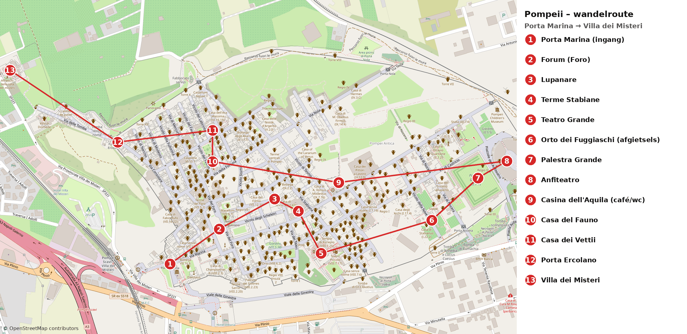</a><br><small>Kaart: rechte lijnen van stop naar stop, volg ter plekke de straten. Tik om te vergroten. © OpenStreetMap-bijdragers</small>',
 stops:[
 {name:'Porta Marina',img:'img/28.jpg',time:'start',leg:'Start: ingang Porta Marina (open 09:00)',url:am('','40.748509,14.483085','w'),
  text:'Je loopt de antieke stad binnen door de oude zeepoort, een steile gewelfde doorgang van basalt met een smalle poort voor voetgangers en een bredere voor ezels. Ooit lag de zee hier vlakbij; nu kijk je over de vlakte van de Sarno naar de bergen van Sorrento.'},
 {name:'Forum van Pompeii',img:'img/29.jpg',time:'ca. 250 m · 4 min',leg:'Porta Marina → Forum',url:am('','40.749447,14.484825','w'),
  text:'Het hart van de stad: een langgerekt plein vol zuilen, met de Jupitertempel aan de kop en de Vesuvius die er dreigend achter oprijst. Dit is het klassieke uitzicht van Pompeii, en ’s ochtends nog rustig.'},
 {name:'Lupanare',img:'img/53.jpg',time:'ca. 250 m · 4 min',leg:'Forum → Vicolo del Lupanare',url:am('','40.750250,14.486778','w'),
  text:'Het enige bordeel van Pompeii dat als zodanig gebouwd is: een smal huis op een kruising, met kleine kamertjes en stenen bedden. Boven de deuren laten erotische fresco’s zien wat er te koop was, en op de muren staan nog krabbels van klanten. Reken op een korte rij.'},
 {name:'Terme Stabiane',img:'img/54.jpg',time:'ca. 100 m · 2 min',leg:'Lupanare → Via dell’Abbondanza',url:am('','40.749921,14.487616','w'),
  text:'De oudste badhuizen van de stad, met een grote zuilenhof om te sporten en aparte baden voor mannen en vrouwen. In de gewelfde kleedkamers zie je nog de stucplafonds en de nissen waar je je kleren neerlegde, en een paar gipsafgietsels van slachtoffers.'},
 {name:'Teatro Grande',img:'img/33.jpg',time:'ca. 200 m · 3 min',leg:'Terme Stabiane → Theaterwijk',url:am('','40.748795,14.488416','w'),
  text:'Het Griekse halfrond theater is in de helling gebouwd en bood plaats aan 5.000 toeschouwers. Ga bovenaan zitten voor het zicht over de ruïnes en het dal; naast de deur ligt het kleine overdekte Odeion.'},
 {name:'Orto dei Fuggiaschi (gipsafgietsels)',img:'img/55.jpg',time:'ca. 450 m · 7 min',leg:'Theaters → Via dell’Abbondanza oost → Orto dei Fuggiaschi',url:am('','40.749678,14.492318','w'),
  text:'De Tuin van de Vluchtelingen: een wijngaard waar dertien mensen, onder wie kinderen, samen stierven terwijl ze de stad probeerden te ontvluchten. Hun gipsafgietsels liggen in een vitrine precies waar ze gevonden zijn. Het stilste en meest aangrijpende moment van de wandeling, met de Vesuvius op de achtergrond.'},
 {name:'Palestra Grande',img:'img/56.jpg',time:'ca. 250 m · 4 min',leg:'Orto dei Fuggiaschi → Palestra Grande',url:am('','40.750810,14.493950','w'),
  text:'Een enorm sportveld van 140 bij 100 meter, omzoomd door zuilengangen en rijen pijnbomen, met in het midden een zwembad. Hier trainden de jongemannen van de stad. Onder de pijnbomen is het heerlijk even schaduw pakken.'},
 {name:'Amfitheater van Pompeii',img:'img/31.jpg',time:'ca. 150 m · 2 min',leg:'Palestra Grande → Amfitheater',url:am('','40.751264,14.494969','w'),
  text:'Het oudste bewaarde stenen amfitheater ter wereld (ca. 70 v.Chr.), groen omzoomd door pijnbomen. Hier vochten de gladiatoren voor 20.000 toeschouwers. Loop de arena in en kijk omhoog naar de tribunes; bij de uitgang zijn wc’s.'},
 {name:'Casina dell’Aquila (café/wc)',img:'img/57.jpg',time:'ca. 650 m · 10 min',leg:'Amfitheater → via Via dell’Abbondanza → Casina dell’Aquila',url:am('','40.750689,14.489038','w'),
  text:'Op de terugweg loop je over de Via dell’Abbondanza, de hoofdstraat met diepe wagensporen, stapstenen en gevels met 2.000 jaar oude verkiezingsleuzen. De witte Casina dell’Aquila is het enige café in het park: wc, koffie, broodjes, en vanaf het terras een mooi uitzicht over de opgravingen. Goed moment voor een pauze.'},
 {name:'Casa del Fauno',img:'img/58.jpg',time:'ca. 500 m · 8 min',leg:'Casina dell’Aquila → Via della Fortuna',url:am('','40.751250,14.484583','w'),
  text:'Het grootste en rijkste huis van Pompeii, een heel bouwblok groot. In het atrium staat het bronzen dansende faunbeeldje waar het huis naar heet (een kopie). Achterin, in twee zuilentuinen, lag het beroemde Alexandermozaïek; het origineel hangt nu in Napels.'},
 {name:'Casa dei Vettii',img:'img/59.jpg',time:'ca. 150 m · 2 min',leg:'Casa del Fauno → Vicolo dei Vettii',url:am('','40.752083,14.484583','w'),
  text:'Het huis van twee rijk geworden vrijgelaten slaven, de broers Vettius, en na twintig jaar restauratie weer open. De kamers rond de tuin zijn beschilderd in diep Pompeiaans rood en zwart, met fijne friezen van amorini aan het werk. Bij de ingang staat de beruchte Priapus die zijn geslacht op een weegschaal legt.'},
 {name:'Porta Ercolano',img:'img/60.jpg',time:'ca. 350 m · 5 min',leg:'Casa dei Vettii → Via Consolare → Porta Ercolano',url:am('','40.751771,14.481238','w'),
  text:'De noordwestelijke stadspoort, aan het eind van de Via Consolare. Daarbuiten loopt de Via dei Sepolcri, een weg langs grafmonumenten van rijke families. ⏰ Let op: de doorgang naar de villa-route sluit om 15:30.'},
 {name:'Villa dei Misteri',img:'img/61.jpg',time:'ca. 500 m · 8 min',leg:'Porta Ercolano → Via dei Sepolcri → Villa dei Misteri',url:am('','40.753694,14.477444','w'),
  text:'Een luxe villa buiten de muren, met in één zaal de beroemdste fresco’s van de oudheid: een doorlopende scène op Pompeiaans rood met levensgrote figuren rond een geheim inwijdingsritueel voor Dionysus. Daarna verlaat je het park bij de villa; het is ca. 700 m (10 min) lopen naar station Pompei Scavi bij Porta Marina.'},
 {name:'Terug naar Moxy Pompeii',img:null,time:'Circumvesuviana 1 halte, of 25 min lopen',leg:'Pompei Scavi → Villa Regina → hotel',url:am('','Moxy%20Pompeii%2C%20Via%20Castriota%2043%2C%2080058%20Torre%20Annunziata','w'),
  text:'Neem vanaf Pompei Scavi de Circumvesuviana richting Napoli, één halte naar Villa Regina. Check in én uit met hetzelfde apparaat (Tap&amp;Go), anders betaal je het maximumtarief. Of loop de ca. 25 minuten terug. ’s Avonds eet je in het Maximall naast de deur.'}
 ]},
amalfi:{
 title:'Amalfikust per boot + strand Sorrento (ma 19 okt)',sub:'Van de nachttrein in Salerno naar Moxy Pompeii · Amalfi, langs Positano over zee en de Marina Grande van Sorrento · bagage: rugzak + tote gaan mee',
 route:'https://www.google.com/maps/dir/Stazione+Marittima+di+Salerno/Duomo+di+Amalfi/Atrani/Porto+di+Amalfi/Marina+Grande+Sorrento/Stazione+Circumvesuviana+Sorrento/Stazione+Villa+Regina/Moxy+Pompeii,+Via+Castriota+43,+Torre+Annunziata',
 note:'⛴️ <b>Travelmar 08:20</b> Salerno (Molo Manfredi, Stazione Marittima, de schelpvormige terminal van Zaha Hadid) → Amalfi ca. 08:55, €9, kaartje op de pier of op <a href="https://www.travelmar.it" onclick="event.stopPropagation()">travelmar.it</a>; 1 tas gratis (45×35×20), extra stuk €3. Reserve: Travelmar 08:40 vanaf Piazza della Concordia → Amalfi 09:15. 🧳 <b>Bagage in Amalfi:</b> Mondadori Point, Corso delle Repubbliche Marinare 17, €5 per stuk, 07:00–13:00 en 15:30–20:00. 🚶 <b>Wandeling Amalfi 09:00–11:45</b> (ca. 2,5 uur, heen en terug naar de haven): Porta della Marina, Duomo + Chiostro, Atrani, Arsenale, Museo della Carta, Valle dei Mulini. <a href="https://www.google.com/maps/dir/?api=1&origin=Porto+di+Amalfi&destination=Porto+di+Amalfi&waypoints=Porta+della+Marina+Amalfi%7CDuomo+di+Amalfi%7CPiazza+Umberto+I+Atrani%7CArsenale+della+Repubblica+Amalfi%7CMuseo+della+Carta+Amalfi&travelmode=walking" onclick="event.stopPropagation()">Wandelroute op Google Maps</a>. ⛴️ <b>Rechtstreeks Amalfi → Sorrento:</b> <b>Alilauro 11:55 → 13:10 via Positano</b> <span class="ok">aanrader</span>, €17,50 + €3,50 per extra tas, kaartje op <a href="https://www.alilauro.it/it/tratte/sorrento-amalfi-amalfi-sorrento/" onclick="event.stopPropagation()">alilauro.it</a> of bij het loket op de pier. Of NLG 10:53 → 11:40, of NLG 13:40 → 14:40. Alternatief met lunch in Positano: Travelmar 12:30 Amalfi → Positano (ca. 12:55, €10), dan NLG 14:10 → Sorrento 14:40, €21,50, <b>vooraf boeken op <a href="https://www.nlg.it/tratte/positano-sorrento-m-n-picasso" onclick="event.stopPropagation()">nlg.it</a></b> (geen loket in Positano). 🚆 <b>Circumvesuviana</b> Sorrento 17:30 of 18:00 → Villa Regina 18:08 / 18:38; tik in en uit met je contactloze kaart, max €4,60, niet op Interrail. 🏨 Moxy Pompeii: inchecken vanaf 15:00. ⚠️ Bij ruwe zee kunnen boten uitvallen; dan de SITA-bus Amalfi → Sorrento.',
 stops:[
 {name:'Ontbijt: Caffé et Cafè',img:null,time:'06:13 aankomst',leg:'Salerno station (ICN 1963) → Corso Garibaldi 46',url:am('','Caff%C3%A9%20et%20Caf%C3%A8%2C%20Corso%20Garibaldi%2046%2C%20Salerno','w'),
  text:'Je komt om 06:13 aan met de nachttrein. Caffé et Cafè is 24 uur open (4,5★ op Google). Daarna langs de Lungomare naar de haven.'},
 {name:'Stazione Marittima, Molo Manfredi',img:'img/38.jpg',time:'08:20 vertrek',leg:'Travelmar Salerno → Amalfi (35 min, €9)',url:am('','40.674808,14.751788','w'),
  text:'De golvende witte terminal van Zaha Hadid, naast Sea Life aan de Lungomare. Het kaartjesloket van Travelmar zit op de pier; vraag bij twijfel "Travelmar Amalfi?". Ga even naar de wc in de terminal. Gemist? Dan de boot van 08:40 vanaf Piazza della Concordia, tegenover het station (aan 09:15).'},
 {name:'Bagage: Mondadori Point',img:null,time:'ca. 08:55–09:00',leg:'Haven Amalfi → Corso delle Repubbliche Marinare 17, 2 min lopen',url:'https://maps.apple.com/?daddr=Corso+delle+Repubbliche+Marinare+17,+84011+Amalfi',
  text:'Boekwinkeltje vlak bij de haven en de bushalte. Bagage bewaren voor €5 per stuk, zonder reservering. Open 07:00–13:00 en 15:30–20:00. Zo loop je de wandeling zonder rugzak en tote; haal ze om ca. 11:40 weer op. Liever alles meenemen? Kan ook: de route is grotendeels vlak of licht hellend.'},
 {name:'Porta della Marina',img:'img/46.jpg',time:'09:00',leg:'Mondadori Point → stadspoort, 2 min lopen',url:am('','Porta%20della%20Marina%2C%20Amalfi','w'),
  text:'De oude zeepoort is de entree van de stad sinds de middeleeuwen. Kijk naast de boog naar het grote keramiektableau dat de handelsroutes van de Republiek Amalfi naar Byzantium en de Levant laat zien. Achter de poort sta je meteen in de drukte van het centrum.'},
 {name:'Piazza Duomo met de Fontana di Sant’Andrea',img:'img/47.jpg',time:'ca. 09:05',leg:'Porta della Marina → Piazza Duomo, 2 min lopen',url:am('','Piazza%20Duomo%2C%20Amalfi','w'),
  text:'Het levendige hart van Amalfi, aan de voet van de monumentale trap naar de kathedraal. In de marmeren fontein staat de apostel Andreas boven zeemeerminnen die water uit hun borsten laten stromen. Gratis, altijd toegankelijk; nu nog rustig, voordat de dagjesmensen komen.'},
 {name:'Duomo di Amalfi + Chiostro del Paradiso',img:'img/48.jpg',time:'ca. 09:10–09:45',leg:'Piazza Duomo → de grote trap op, 2 min',url:am('','Duomo%20di%20Amalfi','w'),
  text:'Een brede trap leidt naar de Arabisch-Normandische kathedraal met zijn gestreepte gevel, gouden mozaïeken en bronzen deuren uit Constantinopel. Via de kassa rechts van de trap loop je de route door het <b>Chiostro del Paradiso</b> (1266–68): een witte kloostergang met 120 dunne dubbele zuiltjes en verweven spitsbogen rond een mediterrane tuin, daarna de Basilica del Crocifisso en de crypte met de relieken van Andreas. Van 1 sept. t/m 2 nov. dagelijks open vanaf 09:00 (laatste toegang 18:30), dus vandaag open. <span class="open">Prijs ca. €3–4: bronnen verschillen</span>. Tijdens een mis kan de route even dicht zijn.'},
 {name:'Atrani',img:'img/49.jpg',time:'ca. 09:55–10:15',leg:'Piazza Duomo → voetgangerstunnel bij parkeergarage Luna Rossa → Atrani, ca. 10 min lopen (vlak)',url:am('','Piazza%20Umberto%20I%2C%20Atrani','w'),
  text:'Het kleinste gemeentetje van Italië, verstopt in het volgende ravijn. Witte huisjes stapelen zich op boven een strandje, met de koepel van San Salvatore de’ Birecto en de boogbrug van de kustweg ervoor. Koffiepauze op het intieme Piazza Umberto I, dan door de tunnel terug. De verlichte voetgangerstunnel is gratis en altijd open. Wil je tijd winnen? Sla Atrani over, dan heb je 30 min extra in de Valle dei Mulini.'},
 {name:'Arsenale della Repubblica',img:'img/50.jpg',time:'ca. 10:25–10:45',leg:'Atrani → tunnel → Largo Cesareo Console, ca. 10 min lopen',url:am('','Arsenale%20della%20Repubblica%2C%20Largo%20Cesareo%20Console%203%2C%20Amalfi','w'),
  text:'Een middeleeuwse scheepswerf (al genoemd in 1042) uitgehouwen in de rots, met hoge spitsboogvaarten van steen. Hier bouwde de zeerepubliek haar galeien; nu zit er het Museo della Bussola e del Ducato Marinaro met een maquette van het middeleeuwse Amalfi. Dagelijks 10:00–19:00 (t/m 2 nov.), €3, kaart of contant.'},
 {name:'Museo della Carta',img:'img/51.jpg',time:'ca. 11:00–11:25',leg:'Via Piazza dei Dogi, Via Lorenzo d’Amalfi en Via Genova het dal in, ca. 15 min licht bergop',url:am('','Museo%20della%20Carta%2C%20Via%20delle%20Cartiere%2023%2C%20Amalfi','w'),
  text:'Onderweg wordt de hoofdstraat steeds smaller en stiller, met trapjes en doorkijkjes naar de citroenterrassen. Het museum zit in een van de oudste papiermolens van Europa, waar de houten hamers nog draaien op het water van de Canneto. Amalfi maakte hier eeuwenlang zijn beroemde handgeschept papier. Van 1 maart t/m 2 nov. dagelijks 10:00–19:00, €4,50 aan de kassa.'},
 {name:'Valle dei Mulini',img:'img/52.jpg',time:'ca. 11:25–11:30',leg:'Museo della Carta → een paar minuten verder het dal in',url:am('','Valle%20dei%20Mulini%2C%20Amalfi','w'),
  text:'Achter het museum ruist de beek tussen de ruïnes van oude papiermolens, onder steile terrassen vol citroenbomen en rotswanden. Gratis en open lucht. Verder lopen naar de Valle delle Ferriere (ca. 40 min enkele reis) past vandaag niet. Daarna ca. 15 min bergaf terug naar de haven en je bagage ophalen (ca. 11:45); de boot vertrekt om 11:55.'},
 {name:'Boot langs de Amalfikust en Positano',img:'img/35.jpg',time:'11:55 → 13:10',leg:'Alilauro Amalfi → Sorrento via Positano (€17,50 + €3,50 per extra tas)',url:am('','Porto%20di%20Amalfi','w'),
  text:'De aanrader: rechtstreeks naar Sorrento, met onderweg een stop in Positano. Zo zie je de pastelkleurige huizen die als een waterval tegen de rotswand lopen vanaf het water, het mooiste zicht, zonder over te stappen. Onderweg kliffen, wachttorens en bergdorpen als Praiano en Furore. Kaartje op alilauro.it of bij het loket op de pier. Andere opties: NLG 10:53 → 11:40 (hele middag Sorrento) of NLG 13:40 → 14:40. Liever lunchen in Positano? Travelmar 12:30 → Positano, dan NLG 14:10 → Sorrento (vooraf boeken op nlg.it).'},
 {name:'Marina Grande, Sorrento',img:'img/32.jpg',time:'13:10 aan · ca. 13:30–17:30',leg:'Haven Sorrento (Marina Piccola) → Marina Grande, ca. 20 min lopen via het centrum',url:am('','Marina%20Grande%2C%20Sorrento','w'),
  text:'Strandmiddag in het vissershaventje: gratis openbaar strand, of iets drinken bij Bagni Sant’Anna op de pier (dagelijks 10–24, 4,1★). Bagni Delfino: keuken 12–14:30 en 18–22. Zon onder rond 18:15.'},
 {name:'Station Sorrento (Circumvesuviana)',img:null,time:'17:30 of 18:00',leg:'Marina Grande → station, ca. 20 min bergop',url:am('','Stazione%20Circumvesuviana%20Sorrento','w'),
  text:'Trein naar Villa Regina (aan 18:08 of 18:38). Tik in en uit met je contactloze bankkaart, max €4,60; Interrail geldt hier niet.'},
 {name:'Moxy Pompeii',img:null,time:'ca. 1,5 km · 20 min lopen',leg:'Villa Regina → hotel (na donker: taxi, ca. 5 min)',url:am('','Moxy%20Pompeii%2C%20Via%20Castriota%2043%2C%2080058%20Torre%20Annunziata','w'),
  text:'Inchecken (vanaf 15:00) en de rest van de avond rustig aan in het hotel; eten kan in het Maximall naast de deur.'}
 ]},
napoli:{
 title:'Napels tot de nachttrein',sub:'Eerst de was tijdens de regen, bagage in een kluisje, dan een gratis stadswandeling: oude stad, Via Toledo, de baai en het uitzicht vanaf de Vomero (ICN 23:06)',
 route:'https://www.google.com/maps/dir/Express+Wash,+Via+Silvio+Spaventa+20,+Napoli/Duomo+di+Napoli/Via+San+Gregorio+Armeno,+Napoli/Piazza+del+Ges%C3%B9+Nuovo,+Napoli/Galleria+Umberto+I,+Napoli/Piazza+del+Plebiscito/Castel+dell%27Ovo/Funicolare+Centrale+Augusteo,+Napoli/Largo+San+Martino,+Napoli/Chiaia,+Napoli/Stazione+Toledo+Napoli/Napoli+Centrale',
 note:'🌧️ <b>Regen tot ca. 18:00</b>, vanaf 19:00 droog; zon onder ca. 18:15. 💶 <b>Alles gratis</b>, op funicolare en metro na (eigen ticket ca. €1,50 per rit <span class="open">check</span>). 🧳 <b>Bagage ’s middags/’s avonds: Stow Your Bags</b>, Via Venezia 64 (3 min lopen van Centrale): zelfbedieningskluisjes, <b>dagelijks 07:00–23:00</b>, vanaf €2,49 per kluisje; rugzak en tas passen samen in één kluisje. <a href="https://www.stowyourbags.com/it/shop/napoli/deposito-bagagli-napoli-centrale-stazione/" onclick="event.stopPropagation()">stowyourbags.com</a>. <b>Ophalen uiterlijk 22:30</b>. 👜 <b>Avond rond Centrale/Garibaldi:</b> telefoon en tas dicht bij je, niet langer rondhangen dan nodig en wacht in de stationshal op je trein.',
 stops:[
 {name:'Moxy Pompeii',img:null,time:'ochtend · trein 09:55',leg:'Start: uitchecken → station Pompei Scavi',url:am('','Moxy%20Pompeii%2C%20Via%20Castriota%2043%2C%2080058%20Torre%20Annunziata','w'),
  text:'Pak in, check uit en loop 700 m (9 min) naar Torre Annunziata Centrale voor de Trenitalia-trein naar Napels.'},
 {name:'Napoli Centrale',img:'img/44.jpg',time:'10:33 · ca. 40 min met de trein',leg:'Napoli P. Garibaldi → bagagedepot',url:am('','Napoli%20Centrale','w'),
  text:'Het moderne station aan de Piazza Garibaldi. Eerst de was; daarna gaan je rugzak en tas in een kluisje bij Stow Your Bags (zie hieronder).'},
 {name:'Express Wash Napoli Garibaldi',img:null,time:'tot 16:10 · was klaar',leg:'Napoli Centrale → Via Silvio Spaventa 20, ca. 5 min lopen',url:am('','Via%20Silvio%20Spaventa%2020%2C%2080142%20Napoli','w'),
  text:'Wasserette waar je zelf wast, ca. 300 m van Napoli Centrale, 4,6★ uit 242 reviews. Wassen en drogen tijdens de regen; om ca. 16:10 klaar. Tel. +39 392 468 5112.'},
 {name:'Stow Your Bags (bagagekluisjes)',img:null,time:'16:20 · ca. 5 min lopen',leg:'Express Wash → Via Venezia 64 (3 min van Centrale)',url:am('','Via%20Venezia%2064%2C%2080142%20Napoli','w'),
  text:'Zelfbedieningskluisjes, <b>dagelijks 07:00–23:00</b>, vanaf <b>€2,49 per kluisje</b>; je rugzak en tas passen samen in één kluisje. Boeken/info: <a href="https://www.stowyourbags.com/it/shop/napoli/deposito-bagagli-napoli-centrale-stazione/" onclick="event.stopPropagation()">stowyourbags.com</a>. Je haalt ze vanavond uiterlijk 22:30 weer op.'},
 {name:'Duomo di Napoli',img:'img/39.jpg',time:'16:45 · ca. 20 min lopen',leg:'Via Venezia → Corso Umberto/Via Duomo',url:am('','Duomo%20di%20Napoli','w'),
  text:'De gotische kathedraal van San Gennaro, de beschermheilige van de stad. <b>Gratis binnen</b> (de schatkapel en de doopkapel kosten entree; die sla je over). Fijne plek om een bui af te wachten.'},
 {name:'Spaccanapoli, San Gregorio Armeno en Gesù Nuovo',img:'img/40.jpg',time:'17:00–17:30 · ca. 5 min lopen',leg:'Duomo → Via San Gregorio Armeno → Via San Biagio dei Librai → Piazza del Gesù',url:am('','Piazza%20del%20Ges%C3%B9%20Nuovo%2C%20Napoli','w'),
  text:'Via San Gregorio Armeno is het straatje van de kerststalmakers. Daarna de kaarsrechte Romeinse straat Spaccanapoli, met wasgoed tussen de palazzi en kapelletjes in de muren, en aan het eind de diamantgevel van de Gesù Nuovo (gratis binnen, handig bij de laatste buien; de regen stopt rond 18:00).'},
 {name:'Via Toledo en Galleria Umberto I',img:null,time:'17:45 · ca. 10–15 min lopen',leg:'Piazza del Gesù → Via Toledo → Galleria Umberto I',url:am('','Galleria%20Umberto%20I%2C%20Napoli','w'),
  text:'De drukke winkelstraat van Napels, en de glazen overdekte passage van Galleria Umberto I (1890) met zijn hoge koepel: gratis en droog.'},
 {name:'Piazza del Plebiscito',img:'img/41.jpg',time:'18:00 · ca. 3 min lopen',leg:'Galleria Umberto I → Piazza del Plebiscito',url:am('','Piazza%20del%20Plebiscito%2C%20Napoli','w'),
  text:'Het grootste plein van Napels, met de halfronde zuilengalerij van San Francesco di Paola tegenover het Palazzo Reale.'},
 {name:'Castel dell’Ovo en de Lungomare',img:'img/42.jpg',time:'18:15 · zonsondergang · ca. 10 min lopen',leg:'Plebiscito → Via Partenope → Borgo Marinari',url:am('','Castel%20dell%27Ovo%2C%20Napoli','w'),
  text:'Het oudste kasteel van de stad op een rotseilandje in zee, met een vissershaventje aan de voet. <b>Terrein gratis</b> <span class="open">check openingstijden</span>. Zonsondergang boven de baai met de Vesuvius; daarna een stukje over de autovrije zeepromenade.'},
 {name:'Funicolare Centrale (Augusteo)',img:null,time:'18:45 · ca. 15 min lopen + ca. 5 min omhoog',leg:'Lungomare → Piazza Trieste e Trento → station Augusteo → Piazzetta Fuga (Vomero)',url:am('','Funicolare%20Centrale%20Augusteo%2C%20Napoli','w'),
  text:'De kabelspoorweg vertrekt onder de Galleria Umberto I en brengt je in een paar minuten naar de Vomero-heuvel. Kaartje ca. €1,50 <span class="open">check</span> aan de automaat of bij een tabacchi.'},
 {name:'Largo San Martino (uitzicht bij Castel Sant’Elmo)',img:'img/43.jpg',time:'19:00–19:30 · ca. 10–15 min lopen bergop',leg:'Piazzetta Fuga → Via Morghen → Largo San Martino',url:am('','Largo%20San%20Martino%2C%20Napoli','w'),
  text:'Het gratis terras naast de Certosa di San Martino, vlak onder Castel Sant’Elmo: bijna hetzelfde panorama als vanaf de kasteelmuren, <b>zonder entree</b>. De stad, de baai en de Vesuvius, nu met alle lichtjes aan. Daarna met de funicolare terug omlaag naar Augusteo.'},
 {name:'Pizza-diner (kies er één)',img:null,time:'19:45–21:15',leg:'Largo San Martino → funicolare omlaag → pizzeria',url:am('','50%20Kal%C3%B2%2C%20Piazza%20Sannazaro%20201%2Fc%2C%2080121%20Napoli','w'),
  text:'<b>1. 50 Kalò</b> (topkeuze), Piazza Sannazaro 201/c, Mergellina: nr. 5 van Italië in 50 Top Pizza 2026, margherita ca. €7. Geen reserveringen: geef je naam op bij de deur en wacht tot je wordt omgeroepen. Open vanaf 19:00 (tot ca. 00:30), dus ga meteen bij opening. Vanaf Largo San Martino de <b>Funicolare di Chiaia</b> omlaag naar Piazza Amedeo, dan ca. 15 min lopen. Terug: <b>metro lijn 2</b> vanaf station Mergellina rechtstreeks naar Napoli Piazza Garibaldi (dan sla je station Toledo over). <a href="'+am('','50%20Kal%C3%B2%2C%20Piazza%20Sannazaro%20201%2Fc%2C%2080121%20Napoli','w')+'" onclick="event.stopPropagation()">Route</a><br><b>2. Da Attilio</b>, Via Pignasecca 17: favoriet van de Napolitanen; probeer de stervormige pizza met met ricotta gevulde punten. Vlak bij het benedenstation van de <b>Funicolare di Montesanto</b> (neem die omlaag vanaf de Vomero). Open 19:00–24:00, zondag dicht. <a href="'+am('','Da%20Attilio%2C%20Via%20Pignasecca%2017%2C%2080134%20Napoli','w')+'" onclick="event.stopPropagation()">Route</a><br><b>3. L’Antica Pizzeria da Michele</b>, Via Cesare Sersale 1: de klassieker uit 1870, alleen margherita (€6,50 + €1 coperto) en marinara. Trek een nummertje. Open tot 23:00, op 5 min van Garibaldi: <b>late optie rond 21:30</b>, vlak voordat je je bagage ophaalt bij Stow Your Bags. <a href="'+am('','L%27Antica%20Pizzeria%20da%20Michele%2C%20Via%20Cesare%20Sersale%201%2C%2080139%20Napoli','w')+'" onclick="event.stopPropagation()">Route</a>'},
 {name:'Metrostation Toledo (Crater de Luz)',img:'img/84.jpg',time:'ca. 21:30 · ca. 10 min lopen',leg:'Pizzeria → Via Toledo → metro lijn 1 Toledo (vanaf Da Attilio ca. 5 min; na 50 Kalò metro lijn 2, na da Michele direct naar Stow Your Bags)',url:am('','Stazione%20Toledo%2C%20Metropolitana%20Napoli','w'),
  text:'Kijk vanaf de roltrappen omhoog in de <b>Crater de Luz</b>, een diepblauwe trechter met mozaïek tot aan straatniveau, een van de mooiste metrostations van Europa. Alleen een metrokaartje nodig (corsa singola ca. €1,50 <span class="open">check</span>; stempelen).'},
 {name:'Garibaldi',img:null,time:'ca. 21:45 · ca. 10 min met de metro',leg:'Metro lijn 1 Toledo → Garibaldi',url:am('','Napoli%20Centrale','r'),
  text:'Uitstappen bij Garibaldi, onder Napoli Centrale. Telefoon en tas dicht bij je rond Piazza Garibaldi.'},
 {name:'Stow Your Bags: bagage ophalen',img:null,time:'uiterlijk 22:15 · ca. 3 min lopen',leg:'Napoli Centrale → Via Venezia 64',url:am('','Via%20Venezia%2064%2C%2080142%20Napoli','w'),
  text:'Rugzak en tas uit het kluisje halen. Open tot 23:00, maar <b>haal ze uiterlijk 22:30 op</b>.'},
 {name:'Napoli Centrale: ICN 1955 om 23:06',img:'img/44.jpg',time:'22:30 in de stationshal · vertrek 23:06',leg:'Via Venezia → stationshal Napoli Centrale, ca. 3 min lopen',url:am('','Napoli%20Centrale','w'),
  text:'Wacht binnen in de stationshal en hou telefoon en tas dicht bij je. <b>Intercity Notte ICN 1955</b> (PNR E2X7R5), vertrek 23:06. Je rijtuig gaat door naar Palermo: <b>uitstappen in Messina Centrale</b> (ca. 05:15).'}
 ]},
taormina:{
 title:'Messina → Taormina (do 22 okt)',sub:'Vroeg uitstappen in Messina, regionale trein naar Taormina-Giardini · Teatro Antico, Corso Umberto, Isola Bella en het strand van Giardini Naxos',
 route:'https://www.google.com/maps/dir/Stazione+Taormina-Giardini/Quiete+Taormina+Naxos,+Via+dei+Sei+Mulini+1,+Giardini+Naxos/Teatro+Antico+di+Taormina/Porta+Catania+Taormina/Funivia+Taormina+Mazzar%C3%B2/Isola+Bella+Taormina/Lungomare+Giardini+Naxos',
 note:'🚆 <b>Niet blijven zitten!</b> Jouw rijtuig van ICN 1955 (PNR E2X7R5) zit in het <b>Palermo-deel</b>; de trein wordt in Messina gesplitst en alleen het Siracusa-deel rijdt via Taormina. <b>Uitstappen in Messina Centrale</b>, aankomst ca. 05:15 <span class="open">check</span>. Vraag de conducteur ’s avonds even waar je eruit moet. 🚆 <b>R 12953 Messina Centrale 05:39 → Taormina-Giardini 06:32</b> (ma–vr, Interrail, geen reservering). Gemist? <b>R 12955 06:30 → 07:33</b> of <b>RV 5383 07:20 → 08:05</b>. Bron: Trenitalia-dienstregeling Calabria-Sicilia 14 juni–12 dec 2026 (bijgewerkt 10 okt). Check de avond ervoor in de Trenitalia-app of de trein van 05:39 rijdt; bij werkzaamheden kan er een bus rijden. 🧳 Loop naar het hotel (ca. 0,7–1 km <span class="open">check</span>) en vraag of je je tas vroeg kunt achterlaten. 🚌 <b>Naar Taormina-stad:</b> bus vanaf Giardini Naxos/het station, ca. 15–20 min, ca. €2–3 <span class="open">check tijden en prijs ter plekke</span>. 🎟️ <b>Teatro Antico:</b> ca. €14, kaartjes op aditusculture.com of aan de kassa <span class="open">check openingstijden</span>. 🚠 <b>Funivia Taormina–Mazzarò:</b> ca. elke 15 min, ca. €8 enkel / €15 retour <span class="open">check</span>. 🏖️ <b>Strand:</b> Isola Bella en Mazzarò zijn kiezelstrandjes; het lange strand van Giardini Naxos is zand met grind. Echt fijn zand komt zondag in Fontane Bianche. 🏨 <b>Quiete Taormina Naxos, Tapestry Collection by Hilton</b> (22–24 okt) <span class="open">nog te boeken</span>, vanaf ca. €154/nacht <span class="open">indicatief</span>: <a href="https://www.hilton.com/en/hotels/ctadtup-quiete-taormina-naxos/" onclick="event.stopPropagation()">hilton.com</a>. Alternatief: Delta Hotels Giardini Naxos (Marriott), ca. €187–207/nacht <span class="open">indicatief</span>, taxi vanaf het station: <a href="https://www.marriott.com/en-us/hotels/ctade-delta-hotels-giardini-naxos/overview/" onclick="event.stopPropagation()">marriott.com</a>.',
 stops:[
 {name:'Messina Centrale',img:'img/85.jpg',time:'ca. 05:15 aankomst',leg:'ICN 1955 (Palermo-deel) → overstappen',url:am('','Stazione%20di%20Messina%20Centrale','w'),
  text:'Uitstappen zodra de trein van de veerboot is gereden en in Messina Centrale staat. Kijk op het vertrekbord voor de <b>R 12953 van 05:39 richting Catania</b>; die stopt in Taormina-Giardini. Je hebt ca. 20 minuten om over te stappen.'},
 {name:'Station Taormina-Giardini',img:'img/86.jpg',time:'06:32 aankomst',leg:'R 12953 Messina → Taormina-Giardini (53 min)',url:am('','Stazione%20Taormina-Giardini','w'),
  text:'Een sierlijk Liberty-station aan zee, onder de rots van Taormina. Vanaf hier loop je langs de kustweg naar het hotel in Giardini Naxos.'},
 {name:'Quiete Taormina Naxos (hotel)',img:null,time:'ca. 0,7–1 km · 10–15 min',leg:'Station → Via dei Sei Mulini 1, Giardini Naxos',url:am('','Quiete%20Taormina%20Naxos%2C%20Via%20dei%20Sei%20Mulini%201%2C%20Giardini%20Naxos','w'),
  text:'Tas afgeven en ontbijten. <span class="open">Nog te boeken</span>: vraag bij het boeken om vroeg inchecken of bagage achterlaten, want je komt om 06:30 aan.'},
 {name:'Teatro Antico di Taormina',img:'img/62.jpg',time:'bus ca. 15–20 min',leg:'Giardini Naxos → Taormina (bus) → Via del Teatro Greco',url:am('','Teatro%20Antico%20di%20Taormina','w'),
  text:'Het Grieks-Romeinse theater ligt hoog boven de zee, met de Etna en de baai van Naxos als decor achter de bakstenen scène. Ga bovenin zitten voor het beroemdste uitzicht van Sicilië. Kom vroeg, voor de dagjesmensen.'},
 {name:'Corso Umberto en Porta Catania',img:'img/63.jpg',time:'ca. 10 min lopen',leg:'Teatro Antico → Corso Umberto → Piazza IX Aprile → Porta Catania',url:am('','Porta%20Catania%2C%20Taormina','w'),
  text:'De autovrije hoofdstraat loopt van Porta Messina naar Porta Catania, langs palazzi, kerkjes en winkels met keramiek. Halverwege ligt het terras van Piazza IX Aprile, met een groot uitzicht over zee en de Etna. Aan het eind staat de middeleeuwse Porta Catania met de Dom ernaast.'},
 {name:'Funivia naar Mazzarò en Isola Bella',img:'img/64.jpg',time:'ca. 15 min',leg:'Porta Messina → Funivia (Via Pirandello) → Mazzarò → 5 min lopen',url:am('','Isola%20Bella%2C%20Taormina','w'),
  text:'Met de kabelbaan zak je in een paar minuten naar de baai van Mazzarò. Vanaf daar loop je naar Isola Bella, een eilandje met natuurreservaat dat met een smalle strook kiezels aan de kust vastzit. Helder water, maar het is een kiezelstrand.'},
 {name:'Strand Giardini Naxos',img:'img/65.jpg',time:'middag',leg:'Mazzarò → bus of taxi → Lungomare Giardini Naxos',url:am('','Lungomare%20Schis%C3%B2%2C%20Giardini%20Naxos','w'),
  text:'Het lange stadsstrand van Giardini Naxos, vlak bij je hotel, met de rots van Taormina op de achtergrond. Zand met grind, rustig zwemwater en strandtenten langs de promenade. Hier lag de eerste Griekse kolonie van Sicilië (734 v.Chr.).'},
 {name:'Terug naar het hotel',img:null,time:'ca. 10 min lopen',leg:'Lungomare → Quiete Taormina Naxos',url:am('','Quiete%20Taormina%20Naxos%2C%20Via%20dei%20Sei%20Mulini%201%2C%20Giardini%20Naxos','w'),
  text:'Inchecken en vroeg slapen na de nachttrein.'}
 ]},
catania:{
 title:'Catania, middag en avond (vr 23 okt)',sub:'Aankomst 14:50 Piazza Stesicoro, bagage opslaan, Teatro Massimo, Villa Bellini bij zonsondergang, Duomo, Via Crociferi, diner · bus 434 naar het hotel',
 route:'https://www.google.com/maps/dir/Anfiteatro+Romano+Catania/Via+Neve+7,+Catania/Teatro+Massimo+Bellini+Catania/Pasticceria+Savia,+Via+Etnea+300,+Catania/Villa+Bellini+Catania/Via+Neve+7,+Catania/Piazza+del+Duomo+Catania/Via+dei+Crociferi+Catania/Vuciata,+Via+Gisira+8,+Catania/Stazione+Catania+Centrale/data=!4m2!4m1!3e2',
 note:'☀️ <b>Weer vr 23 okt:</b> zonnig tot half bewolkt, 13–24°C, droog, weinig wind; zonsondergang 18:12 (de klok gaat pas zaterdagnacht terug). 🚌 <b>Aankomst:</b> volgens jou ca. 14:50 op Piazza Stesicoro. De Interbus-lijn Taormina → Catania rijdt via Via Etnea (o.a. halte Piazza Cavour) en eindigt bij het busterminal Via Archimede, vlak bij Stazione Centrale en metro Giovanni XXIII; <span class="open">controleer in de bus waar je uitstapt</span>. Zit je op het terminal: metro Giovanni XXIII → Stesicoro (1 halte, vrijdag tot 01:00; prijs niet gecontroleerd). 🧳 <b>Bagage (rugzak + tote):</b> aanrader <b>Radical Storage Piazza Stesicoro, Via Neve 7</b>: dagelijks 08:30–22:00, €3,90 per tas per dag (dus €7,80 voor twee; optioneel €1,99 per tas verzekering), <b>online reserveren verplicht</b> (geen walk-in, geen contant), ca. 2 min lopen van het plein; het exacte adres krijg je na de reservering. Alternatief zonder reservering: <b>Baggy Lockers</b>, Via Antonino di Sangiuliano 103 (ca. 900 m van Stesicoro richting station), 06:00–23:00, automatische kluisjes: medium kluisje (2 tassen) ca. €14 voor 7 uur, ca. €21 voor een dag. Ik heb niets geboekt of betaald. Andere optie: eerst naar het hotel (bus 434 vanaf Stazione Centrale, ca. 35–40 min), inchecken en terugkomen; dat kost je een groot deel van de middag. 🏨 <b>Four Points by Sheraton Catania</b>, Via Antonello da Messina 45, Aci Castello: inchecken kan ook laat, maar <span class="open">meld je late aankomst (ca. 22:15–23:30) bij het hotel; 24-uursreceptie niet gecontroleerd</span>. 🚌 <b>Terug naar het hotel:</b> bus 434 vanaf Stazione Centrale 20:35, 21:40 en <b>22:40 (laatste)</b>, ca. 35–40 min, kaartje €1,40 (app AMTS of tabaccheria), €2 bij de chauffeur; uitstappen bij halte Antonello da Messina. Taxi ca. €20–30 <span class="open">schatting</span>. De laatste directe trein (RE 5372 18:34 → Cannizzaro 18:42) is te vroeg. 🐟 De Pescheria is in de middag al dicht (tot ca. 14:00). 🚶 <b>Alles gratis te lopen</b> (ca. 6 km); betaald is alleen <i>optioneel</i>. Bron bagage en metro: Radical Storage, Baggy Lockers en Circumetnea, opgevraagd 23 okt.<br><a href="img/route_catania.png">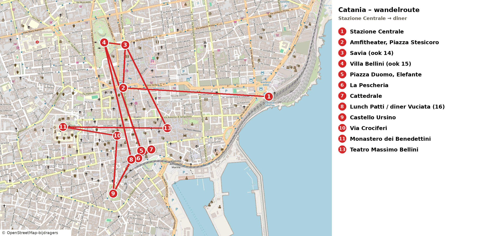</a><br><small>Kaart: rechte lijnen van stop naar stop, volg ter plekke de straten. Tik om te vergroten. © OpenStreetMap-bijdragers</small>',
 stops:[
 {name:'Piazza Stesicoro: Romeins amfitheater',img:'img/98.jpg',time:'14:50–15:05',leg:'Aankomst met de bus uit Taormina; Via Etnea begint hier',url:am('','Anfiteatro%20Romano%2C%20Piazza%20Stesicoro%2C%20Catania','w'),
  text:'Midden in de stad ligt, enkele meters onder straatniveau, het Romeinse amfitheater van Catania uit de 2e eeuw, ooit een van de grootste van het rijk. Van buiten kijk je er gratis in vanaf het plein; binnen kost het €4 (<i>optioneel</i>; <span class="open">sluitingstijd niet gecontroleerd</span>). Het donkere lavasteen van de bogen zie je overal in de stad terug.'},
 {name:'Bagage opslaan: Radical Storage, Via Neve 7',img:null,time:'15:05–15:15',leg:'Piazza Stesicoro → Via Neve 7, ca. 100 m, 2 min lopen',url:am('','Via%20Neve%207%2C%20Catania','w'),
  text:'Reserveer vooraf online bij Radical Storage (Piazza Stesicoro, 08:30–22:00, €3,90 per tas, dus €7,80 voor rugzak en tote) en laat de bevestiging zien. Ophalen kan tot 22:00; plan 18:25. Geen reservering gewenst? Dan <b>Baggy Lockers</b> in Via Antonino di Sangiuliano 103 (06:00–23:00, zelfbediening, ca. €14 voor 7 uur voor twee tassen), ca. 900 m lopen. <span class="open">Niets geboekt; prijzen van de websites van 23 okt, niet ter plekke bevestigd</span>.'},
 {name:'Teatro Massimo Bellini (van buiten)',img:'img/96.jpg',time:'15:25–15:45',leg:'Via Neve → Teatro Massimo, ca. 600 m, 8 min lopen',url:am('','Teatro%20Massimo%20Bellini%2C%20Catania','w'),
  text:'Het operahuis van Catania, vernoemd naar de componist Vincenzo Bellini, geboren in de stad (Norma). De neoclassicistische gevel kijkt uit op een fontein; van buiten gratis. Rondleidingen (€6,50, di–za in de ochtend, vooraf boeken) zijn voor vandaag al voorbij.'},
 {name:'Pasticceria Savia: hartige merenda',img:null,time:'16:00–16:30',leg:'Teatro Massimo → Via Etnea 300, ca. 1,1 km, 14 min lopen',url:am('','Pasticceria%20Savia%2C%20Via%20Etnea%20300%2C%20Catania','w'),
  text:'Rosticceria en bar aan Via Etnea (Google 4,4 met meer dan 14.000 reviews; zaterdag 08:00–21:20, maandag dicht, <span class="open">vrijdag niet apart gecontroleerd</span>). Neem hartig: arancino (ragù, of prosciutto en mozzarella), cipollina of pizzetta, met een koffie. Een cannolo of granita (mandorla of pistacchio) kan er daarna nog bij.'},
 {name:'Villa Bellini: zonsondergang',img:'img/100.jpg',time:'16:35–18:15',leg:'Savia → Villa Bellini, ca. 250 m, 3 min lopen',url:am('','Villa%20Bellini%2C%20Catania','w'),
  text:'De stadstuin van Catania, gratis en in het najaar open tot ca. 22:00 (de gemeente noemt 21:00), met bloemenklok en uitzicht op de Etna bij helder weer. Loop naar de bovenste esplanade voor de <b>zonsondergang van 18:12</b> met uitzicht over de stad. Het Criptoportico is alleen op zaterdag en zondag 09:00–13:00 open, dus niet vandaag.'},
 {name:'Bagage ophalen en Via Etnea in de schemering',img:'img/97.jpg',time:'18:25–18:45',leg:'Villa Bellini → Via Neve 7, ca. 640 m, 8 min lopen',url:am('','Via%20Neve%207%2C%20Catania','w'),
  text:'Haal je tassen op (Radical sluit pas om 22:00) en loop dan over Via Etnea bergaf richting het Duomo: de straat loopt recht naar de Etna, en na zonsondergang gaat de verlichting aan. De foto toont de Etna aan het eind van een Catanese straat; <span class="open">niet zeker dat het precies Via Etnea is</span>.'},
 {name:'Piazza del Duomo en Fontana dell’Elefante',img:'img/90.jpg',time:'18:55–19:10',leg:'Via Neve → Piazza Duomo via Via Etnea, ca. 700 m, 9 min lopen',url:am('','Piazza%20del%20Duomo%2C%20Catania','w'),
  text:'Het hart van Catania, UNESCO-werelderfgoed: de lavasteen Elefante (Liotru) met obelisk en daarachter de Fontana dell’Amenano. De Cattedrale di Sant’Agata is gratis en in de middag open tot 19:00 (gemeentelijke lijst; <span class="open">andere bronnen geven iets andere uren, en tijdens de mis kun je niet rondkijken</span>). Zwart lavasteen en wit kalksteen zie je overal terug in de barokke gevels.'},
 {name:'Via Crociferi',img:'img/94.jpg',time:'19:20–19:40',leg:'Duomo → Via Crociferi, ca. 500 m, 6 min lopen (schatting)',url:am('','Via%20dei%20Crociferi%2C%20Catania','w'),
  text:'De barokke hoofdstraat van Catania met kerken, kloosterpoorten en de Arco di San Benedetto, ’s avonds mooi verlicht en rustig. De kerken zijn nu dicht; je loopt hier voor de gevels.'},
 {name:'Diner: Vuciata of Trattoria del Cavaliere',img:null,time:'19:50–21:15',leg:'Via Crociferi → Via Gisira, ca. 500 m, 6 min lopen (schatting)',url:am('','Vuciata%2C%20Via%20Gisira%208%2C%20Catania','w'),
  text:'<b>Vuciata</b> (Via Gisira 8/10, Google 4,4 met ca. 3.400 reviews, zaterdag 10:00–23:30, ca. €20–30, coperto €2,50, tel. +39 095 378 8169, salumi en vlees; <span class="open">vrijdag niet apart bevestigd</span>). Alternatief: <b>Trattoria del Cavaliere</b> (Via Paternò 11, Google 4,2 met ca. 12.000 reviews, ca. €10–20, tot middernacht). Reserve: Me Cumpari Turiddu (Piazza Turi Ferro 36, Google 4,3, ca. €30–50). Reserveren is verstandig op vrijdagavond.'},
 {name:'Terug naar het hotel',img:null,time:'21:15 lopen, bus 434 21:40 of laatste 22:40',leg:'Vuciata → Stazione Centrale, ca. 1,6 km, 20 min lopen (of taxi)',url:am('','Stazione%20di%20Catania%20Centrale','w'),
  text:'<b>Bus 434</b> vanaf Stazione Centrale 21:40 of de <b>laatste om 22:40</b> (ca. 35–40 min; je bent dan rond 22:20 of 23:20 bij het hotel), kaartje €1,40 in de app AMTS of bij een tabaccheria, €2 bij de chauffeur; uitstappen bij halte Antonello da Messina. Of taxi ca. €20–30 <span class="open">schatting</span>. Haal je 21:40 niet, neem dan de 22:40 of een taxi. Check in bij Four Points, Via Antonello da Messina 45.'}
 ]},
ortigia:{
 title:'Dagtrip Siracusa en Ortigia (za 24 okt)',sub:'Trein en Trenitalia-bus naar Siracusa · markt van Ortigia (zaterdag open), Tempio di Apollo, Duomo, Fonte Aretusa · terug 17:11',
 route:'https://www.google.com/maps/dir/Via+Giuseppe+Rubino,+Siracusa/Tempio+di+Apollo+Siracusa/Mercato+di+Ortigia+Siracusa/Piazza+Duomo+Siracusa/Fonte+Aretusa/Castello+Maniace/data=!4m2!4m1!3e2',
 note:'🅱️ <b>Dagtrip voor zaterdag 24 okt</b> (de markt van Ortigia is zaterdag open). ☀️ Weer: 13–26°C, droog, weinig wind (max ca. 15 km/u) <span class="open">voorspelling voor Catania; Siracusa niet apart gecontroleerd</span>. ⏰ In de nacht van zaterdag op zondag gaat de klok een uur terug; vandaag nog zomertijd. 🏨 Je tassen blijven in de kamer van Four Points. 🚆 <b>Heen:</b> hotel weg 07:25 (ca. 1,3 km, 20 min bergop) → <b>RE 12959 Cannizzaro 07:49 → Catania Centrale 08:02</b> (Interrail, rechtstreeks; ook 07:00 → 07:12 en 07:18 → 07:37). Dan de Trenitalia-bus <b>PA519 Catania Centrale 08:56 → Siracusa 09:49</b> (rechtstreeks); aankomst bij Via Rubino. De spoorlijn Catania–Siracusa is een buslijn. 🚌 <b>Terug:</b> <b>bus PA538 Siracusa 17:11 → Catania Centrale 18:19</b>; dan <b>RE 5372 18:34 → Cannizzaro 18:42</b> (laatste directe trein, 15 min overstap, krap) of bus 434 vanaf Stazione Centrale 19:30 en later (zaterdag aangenomen gelijk aan de weekdienst). 🛒 <b>Zaterdag open:</b> markt van Ortigia (t/m ca. 14:00), Caseificio Borderi en Fratelli Burgio (panineria) <span class="open">openingstijden niet gecontroleerd</span>. 🚶 Alles gratis te lopen; betaald is alleen <i>optioneel</i>. Reken op een lange dag (ca. 2 uur reizen heen en 2 uur terug). Bron: lefrecce.it (Trenitalia) en AMTS-boekje, opgevraagd 22–23 okt; <span class="open">Interrail in de Trenitalia-bus: check bij de chauffeur</span>.<br><a href="img/route_ortigia.png">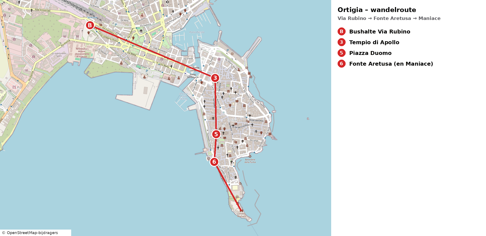</a><br><small>Kaart: rechte lijnen van stop naar stop, volg ter plekke de straten. Tik om te vergroten. © OpenStreetMap-bijdragers</small>',
 stops:[
 {name:'Trein: Cannizzaro → Catania Centrale',img:null,time:'07:49 → 08:02',leg:'Hotel → station Cannizzaro, ca. 1,3 km bergop (ca. 20 min); vertrek hotel 07:25',url:am('','Stazione%20di%20Cannizzaro%2C%20Aci%20Castello','w'),
  text:'<b>RE 12959 Cannizzaro 07:49 → Catania Centrale 08:02</b> (Interrail, rechtstreeks). Eerder: 07:00 → 07:12 en 07:18 → 07:37. Liever niet lopen: bus 434 (€1,40) vanaf halte Antonello da Messina, ca. 35–40 min <span class="open">tijd bij de hotelhalte niet gecontroleerd</span>. Koop onderweg een koffie en een arancino in Catania.'},
 {name:'Catania Centrale: bus PA519',img:'img/101.jpg',time:'08:56 → 09:49',leg:'Overstap, ca. 55 min; bus rechtstreeks 53 min',url:am('','Stazione%20di%20Catania%20Centrale','w'),
  text:'De Trenitalia-vervangende bus vertrekt bij het station; Interrail-geldigheid <span class="open">check bij de chauffeur</span>. Tijd voor koffie en een arancino. Zit je te laat, dan rijden er later op de dag ook bussen, maar de vroege bus geeft je de hele ochtend voor de markt.'},
 {name:'Tempio di Apollo',img:'img/69.jpg',time:'ca. 10:10',leg:'Via Rubino → Corso Umberto → Ponte Umbertino, ca. 15–20 min',url:am('','Tempio%20di%20Apollo%2C%20Siracusa','w'),
  text:'Direct over de brug naar Ortigia staan de resten van de oudste Dorische tempel van Sicilië (begin 6e eeuw v.Chr.): enorme zuilstompen en een stuk van de muur, midden op een pleintje. Gratis te zien vanaf de straat.'},
 {name:'Mercato di Ortigia',img:'img/102.jpg',time:'ca. 10:30–12:15',leg:'Tempio di Apollo → Via del Mercato, ca. 150 m, 2 min',url:am('','Mercato%20di%20Ortigia%2C%20Siracusa','w'),
  text:'De markt achter de tempel: kramen met fruit, groente, olijven, kaas (caciocavallo, provola) en salumi, en kleine panineria’s waar je een broodje met salami of prosciutto kunt laten maken. Zaterdag is de markt open, ’s ochtends het drukst; ze sluit rond 14:00 <span class="open">niet gecontroleerd</span>. Je eet geen vis: kijk naar de viskramen als bezienswaardigheid. Koop brood, kaas en salumi voor een picknick aan zee, of eet bij Caseificio Borderi of Fratelli Burgio <span class="open">niet gecontroleerd</span>. Foto: Giovanni Dall’Orto, CC BY.'},
 {name:'Piazza Duomo',img:'img/67.jpg',time:'ca. 12:30',leg:'Via Cavour → Piazza Duomo, ca. 8 min',url:am('','Piazza%20Duomo%2C%20Siracusa','w'),
  text:'Een van de mooiste pleinen van Italië: licht, langgerekt en omringd door barokke palazzi. De Duomo is een Griekse Athenatempel uit de 5e eeuw v.Chr.; in de zijmuur zie je de Dorische zuilen nog staan. Het plein is gratis; voor de kathedraal binnen betaal je <i>optioneel</i> een paar euro.'},
 {name:'Fonte Aretusa en Lungomare Alfeo',img:'img/68.jpg',time:'ca. 13:15–16:30',leg:'Piazza Duomo → Largo Aretusa, ca. 4 min',url:am('','Fonte%20Aretusa%2C%20Siracusa','w'),
  text:'Een zoetwaterbron met papyrus, vlak aan zee. Loop daarna langs de oude zeemuur naar het Castello Maniace op de punt van het eiland (van buiten gratis). Terrasje of gelato onderweg; picknick op een bankje aan het water.'},
 {name:'Terug: bus 17:11 → Catania 18:19',img:null,time:'17:11 → 18:19',leg:'Ortigia → Via Rubino, ca. 20 min lopen (vertrek 16:40)',url:am('','Via%20Giuseppe%20Rubino%2C%20Siracusa','w'),
  text:'<b>Bus PA538 Siracusa 17:11 → Catania Centrale 18:19</b>. In Catania: <b>RE 5372 18:34 → Cannizzaro 18:42</b> (15 min overstap) of bus 434 19:30; vanaf Cannizzaro ca. 1,3 km bergaf naar het hotel (17 min). Diner in Aci Castello: <b>Dietro Le Mura</b> (pizzeria bij het kasteel, Google 4,0, vanaf 19:00) of <b>Fornace41</b> in Aci Trezza (pinsa, taglieri met salumi, Google 4,4, vanaf 18:00). <span class="open">Vertrekhalte en tijd van de terugbus niet ter plekke bevestigd</span>.'}
 ]},
catrome:{
 title:'Catania → Rome (zo 25 okt)',sub:'RE 09:15 naar Messina · Blu Jet over de Straat van Messina · Frecciarossa 12:26 vanaf Villa S. Giovanni · Roma Termini 17:40 · metro A naar het hotel (c-hotels Club House, Cornelia)',
 route:'https://www.google.com/maps/dir/Stazione+Catania+Centrale/Stazione+Messina+Centrale/Messina+Marittima/Stazione+Villa+San+Giovanni/Stazione+Roma+Termini',
 note:'⏰ <b>Vannacht gaat de klok een uur terug (wintertijd)</b>; je telefoon doet dat zelf. Alle tijden hieronder zijn al wintertijd. Zonsondergang in Rome ca. 17:10; je komt in het donker aan. 🧭 <b>Reis (optie D):</b> <b>RE 22110 Catania Centrale 09:15 → Messina Centrale 11:10</b> (regionaal, op je pass) · 5 min lopen naar Messina Marittima (<b>korte overstap</b>) · <b>Blu Jet 11:30 → Villa S. Giovanni 11:50</b> (<b>niet</b> op je pass, ca. €2,50) · <b>FR 9658 Villa S. Giovanni 12:26 → Roma Termini 17:40</b> (richting Milano Centrale, Interrail-reservering €13 verplicht). <span class="open">⚠️ Nog doen: FR 9658 reserveren (of je reservering controleren) en het Blu Jet-kaartje kopen in de Trenitalia-app of aan de Blu Jet-kassa in Messina</span>. <span class="open">⚠️ Vandaag telt als reisdag op je pass: check in de Interrail-app of je genoeg reisdagen hebt (25, 28, 29, 31 okt, 1 en 2 nov = 6)</span>. 🌊 De Riviera dei Ciclopi valt af: daar is vóór de trein van 09:15 geen tijd meer voor. '+'🏨 <b>c-hotels Club House Roma</b>, Via Andrea Alciato 14 (wijk Aurelio), zo 25 – wo 28 okt (3 nachten). Dichtstbijzijnde metro: <b>A Cornelia</b>, ca. 0,6 km, 8 min lopen. Met metro A ben je in ca. 15 min bij Flaminio/Piazza del Popolo en in ca. 20 min bij Termini; €1,50 per rit, tik in met je contactloze kaart.',
 stops:[
 {name:'Four Points Catania: uitchecken en taxi',img:null,time:'ca. 08:30 vertrek',leg:'Hotel → Catania Centrale, ca. 9 km, ca. 20 min met de taxi',url:am('','Stazione%20di%20Catania%20Centrale','d'),
  text:'Ontbijt in het hotel, uitchecken en om ca. 08:30 met de taxi naar het station (vraag de receptie hem te bestellen; ca. €25–35 <span class="open">prijs niet gecontroleerd</span>). Bus 434 rijdt op zondag pas vanaf 10:15: de taxi is de enige goede optie.'},
 {name:'Catania Centrale: RE 22110 om 09:15',img:'img/101.jpg',time:'09:15 → 11:10',leg:'Regionale trein richting Messina Centrale (op je pass, geen reservering)',url:am('','Stazione%20di%20Catania%20Centrale','w'),
  text:'<b>RE 22110 Catania Centrale 09:15 → Messina Centrale 11:10</b>. De regionale trein volgt de Ionische kust langs Acireale, Giarre en Taormina, met de zee rechts. Zit aan de rechterkant. Koop in het station iets hartigs voor onderweg (arancino of panino): bij de korte overstap in Messina is daar geen tijd voor.'},
 {name:'Messina Centrale → Messina Marittima',img:'img/85.jpg',time:'11:10 → 11:30',leg:'Lopen naar de aanlegsteiger van Blu Jet, ca. 5 min (korte overstap)',url:am('','Messina%20Marittima%2C%20Messina','w'),
  text:'Messina Marittima ligt direct naast het hoofdstation, aan de havenkant. Loop meteen door en volg de borden <i>Aliscafi / Blu Jet</i>. Je hebt 20 minuten: genoeg als de trein op tijd is. <span class="open">Bij vertraging: neem de volgende Blu Jet (frequentie op zondag niet gecontroleerd); de FR van 12:26 geeft je 36 min marge</span>.'},
 {name:'Blu Jet over de Straat van Messina',img:'img/126.jpg',time:'11:30 → 11:50',leg:'Draagvleugelboot Messina Marittima → Villa S. Giovanni, 20 min (niet op je pass, ca. €2,50)',url:am('','Villa%20San%20Giovanni%20porto','w'),
  text:'Twintig minuten over de Straat van Messina, de zeestraat tussen Sicilië en het vasteland, waar volgens de mythe de monsters Scylla en Charybdis op de loer lagen. Achteruit kijk je op Messina met de gouden Madonna op de havenpier. Kaartje (ca. €2,50) in de Trenitalia-app of aan de Blu Jet-kassa <span class="open">prijs niet gecontroleerd</span>.'},
 {name:'Villa S. Giovanni: FR 9658 om 12:26',img:null,time:'12:26 → 17:40',leg:'Van de aanlegsteiger naar het station, enkele minuten lopen; 36 min overstap',url:am('','Stazione%20di%20Villa%20San%20Giovanni','w'),
  text:'<b>Frecciarossa 9658 Villa S. Giovanni 12:26 → Roma Termini 17:40</b>, richting Milano Centrale, 1e klas met verplichte <b>Interrail-reservering €13</b> <span class="open">nog maken of controleren</span>. Ruim vijf uur langs de kust van Calabrië en via Napoli naar Rome. In de 1e klas krijg je een drankje en een snack; voor een echte lunch heeft de trein een bar.'},
 {name:'Aankomst Roma Termini',img:'img/106.jpg',time:'17:40',leg:'FR 9658 rechtstreeks naar Rome',url:am('','Stazione%20Roma%20Termini','w'),
  text:'Het hoofdstation van Rome; het is al donker. Woensdag vertrek je hier ook weer (FR 8520 om 14:45). Neem metro A naar je hotel bij Cornelia (zie hieronder) en eet daar in de buurt.'},
 {name:'Naar het hotel: c-hotels Club House Roma',img:'img/140.jpg',time:'ca. 18:00–18:30',leg:'Metro A Termini → Cornelia (richting Battistini), 10 haltes, ca. 20 min rechtstreeks · dan ca. 0,6 km, 8 min lopen',url:am('','Via%20Andrea%20Alciato%2014%2C%20Roma','w'),
  text:'In het station volg je de rode <b>M</b>-borden naar <b>lijn A</b>, richting <i>Battistini</i>. Cornelia is een eenvoudig station in een gewone woonwijk; het hotel ligt er vlakbij, in Via Andrea Alciato 14. Hier slaap je drie nachten (zo 25 – wo 28 okt). <b>Eten vlakbij</b>: <b>Fusioni</b> (Largo Caravillani 3, ca. 5 min lopen, vanaf 18:00, 06 6601 6323), <b>Lo Zio Frankie</b> (Via Domenico Tardini 56/58, ca. 6 min, vanaf 19:00, 06 6600 0292) of <b>I Fiori di Bacco</b> (Via dei Monti di Creta 31, vanaf 18:00) <span class="open">openingstijden van eerder opgezocht, niet opnieuw gecontroleerd</span>.',extra:{url:'?stad=rome26',label:'➡️ Volgende dag: Rome, Vaticaan & Trastevere'}}
 ]},
rome26:{
 title:'Rome (ma 26 okt)',sub:'Vaticaan & Trastevere: Sint-Pieter (gratis) · lunch in Borgo · Engelenburcht van buiten · Campo de’ Fiori · Trastevere · zonsondergang op de Gianicolo · ca. 5,6 km lopen',
 route:'https://www.google.com/maps/dir/Ottaviano+Roma/Basilica+di+San+Pietro/Borgo+Pio+Roma/Castel+Sant%27Angelo/Campo+de%27+Fiori+Roma/Basilica+di+Santa+Maria+in+Trastevere/Piazzale+Giuseppe+Garibaldi+Roma/data=!4m2!4m1!3e2',
 note:'🧭 <b>Dag:</b> rustig starten, rond 11:00 het hotel uit, en dan vanaf het Vaticaan de stad in lopen tot de zonsondergang op de Gianicolo (ca. 17:14). ⛪ <b>Sint-Pietersbasiliek</b>: gratis, geen kaartje nodig, wel een <b>veiligheidscontrole</b> onder de rechter zuilengalerij (als je naar de kerk kijkt); rond het middaguur kan de rij 30–60 min zijn. Open 07:00–19:00. Een tijdslot met audiogids kan voor €7 op basilicasanpietro.va. Kleding: schouders en knieën bedekt. 🖼️ De Vaticaanse Musea zijn deze keer overgeslagen (uitverkocht). 🏰 <b>Castel Sant’Angelo is op maandag dicht</b>: vandaag alleen van buiten, morgen ga je naar binnen. 🍕 <b>Alternatief voor de lunch:</b> stap één halte eerder uit bij <b>metro Cipro</b> (3 haltes vanaf Cornelia) voor <b>Pizzarium Bonci</b> (Via della Meloria 43, ma–za 11:00–22:00 volgens bonci.it): pizza al taglio met o.a. mortadella en prosciutto, staand of afhalen; daarna ca. 1,7 km (22 min) lopen naar het Sint-Pietersplein. 🌇 Zonsondergang ca. 17:14. '+'🏨 <b>c-hotels Club House Roma</b>, Via Andrea Alciato 14 (wijk Aurelio), zo 25 – wo 28 okt (3 nachten). Dichtstbijzijnde metro: <b>A Cornelia</b>, ca. 0,6 km, 8 min lopen. Met metro A ben je in ca. 15 min bij Flaminio/Piazza del Popolo en in ca. 20 min bij Termini; €1,50 per rit, tik in met je contactloze kaart.'+'<br><a href="img/route_rome26.png">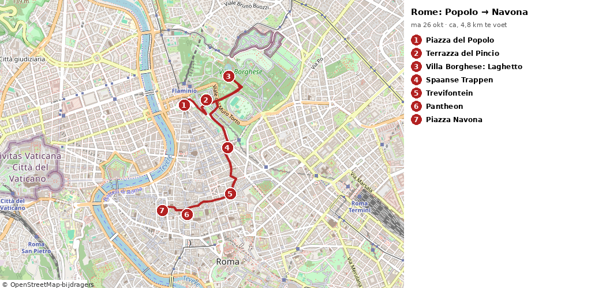</a><br><small>Wandelroute over straten, stops 1–7 (metro Ottaviano → Gianicolo, ca. 5,6 km). Tik om te vergroten. © OpenStreetMap-bijdragers</small>',
 stops:[
 {name:'Metro A Cornelia → Ottaviano',img:'img/140.jpg',time:'11:00 → ca. 11:15',leg:'Hotel → metro Cornelia, ca. 0,6 km, 8 min lopen · metro A richting Anagnina, 4 haltes, ca. 7 min rechtstreeks',url:am('','Metro%20Ottaviano%2C%20Roma','w'),
  text:'Rond 11:00 het hotel uit en bij Cornelia de metro in, richting <i>Anagnina</i>. Bij <b>Ottaviano</b> neem je de uitgang Via Ottaviano en loop je rechtdoor naar het zuiden: aan het eind van de straat zie je de zuilen van Bernini al.'},
 {name:'Sint-Pietersplein en Sint-Pietersbasiliek',img:'img/142.jpg',time:'ca. 11:30–13:00',leg:'Metro Ottaviano → Via Ottaviano → veiligheidscontrole onder de rechter zuilengalerij, ca. 0,85 km, 11 min lopen',url:am('','Basilica%20di%20San%20Pietro%2C%20Citt%C3%A0%20del%20Vaticano','w'),
  text:'Bernini’s plein (1656–1667) omarmt je met twee halve cirkels van 284 zuilen. Ga op een van de ronde stenen tussen de obelisk en een fontein staan: dan vallen de vier rijen zuilen achter elkaar weg. De basiliek zelf (1506–1626, ontwerpen van Bramante, Michelangelo en Bernini) is de grootste kerk van de christelijke wereld. Rechts bij de ingang staat Michelangelo’s <b>Pietà</b>, die hij maakte toen hij 24 was; onder de koepel staat Bernini’s bronzen baldakijn boven het graf van Petrus. Gratis. <i>Optioneel</i>: de koepel op, €34 met de trap of €44 met de lift (inclusief basiliek; ingang rechts van de kerk) <span class="open">tijdsloten en laatste toegang niet gecontroleerd</span>. Reken dan op een uur extra.'},
 {name:'Lunch in Borgo Pio',img:'img/143.jpg',time:'ca. 13:15–14:15',leg:'Sint-Pietersplein → via de Porta Sant’Anna naar Borgo Pio, ca. 0,4 km, 5 min lopen',url:am('','Borgo%20Pio%2C%20Roma','w'),
  text:'Borgo is de oude wijk tussen het Vaticaan en de Engelenburcht, ooit de woonbuurt van pelgrims en pauselijk personeel. Borgo Pio is een autovrije straat met terrasjes: goed voor een tagliere met prosciutto en salame, een carbonara of een panino. Er zitten hier ook veel toeristenzaakjes: kijk of er Italianen zitten <span class="open">geen restaurant gecontroleerd</span>.'},
 {name:'Castel Sant’Angelo en Ponte Sant’Angelo (van buiten)',img:'img/138.jpg',time:'ca. 14:30–14:50',leg:'Borgo Pio → Castel Sant’Angelo, ca. 0,9 km, 11 min lopen',url:am('','Ponte%20Sant%27Angelo%2C%20Roma','w'),
  text:'Gebouwd als grafmonument voor keizer Hadrianus (ca. 135 n.Chr.), later burcht en toevluchtsoord van de pausen: via een overdekte muurgang, de <i>Passetto di Borgo</i>, konden ze vanuit het Vaticaan hierheen vluchten. Je ziet die muur langs Borgo Pio lopen. Vandaag is het kasteel dicht (maandag); morgen ga je naar binnen. Steek de Tiber over via de <b>Engelenbrug</b>, met tien engelen uit het atelier van Bernini.'},
 {name:'Campo de’ Fiori',img:'img/134.jpg',time:'ca. 15:10–15:30',leg:'Engelenbrug → Via dei Banchi Vecchi → Campo de’ Fiori, ca. 1,4 km, 17–19 min lopen',url:am('','Campo%20de%27%20Fiori%2C%20Roma','w'),
  text:'Het levendige plein waar ooit ketters werden verbrand; het sombere standbeeld is van Giordano Bruno (1600). De ochtendmarkt is rond 14:00 al opgeruimd, maar rond het plein zitten goede bakkers en salumerie. Twee straten verder ligt het Palazzo Farnese (nu de Franse ambassade) aan een rustig plein met twee fonteinen.'},
 {name:'Trastevere: Santa Maria in Trastevere',img:'img/135.jpg',time:'ca. 15:45–16:30',leg:'Campo de’ Fiori → Ponte Sisto → Piazza di Santa Maria in Trastevere, ca. 0,9 km, 12 min lopen',url:am('','Basilica%20di%20Santa%20Maria%20in%20Trastevere%2C%20Roma','w'),
  text:'Over de voetgangersbrug Ponte Sisto kom je in Trastevere, de oude volkswijk met klimop, wasgoed en kinderkopjes. Op het centrale plein staat een van de oudste kerken van Rome, met goudglanzende mozaïeken uit de 12e en 13e eeuw (gratis). Dwaal daarna door de straatjes rond Via della Lungaretta en Vicolo del Cinque.'},
 {name:'Gianicolo: zonsondergang',img:'img/136.jpg',time:'ca. 16:50–17:35 (zon onder ca. 17:14)',leg:'Trastevere → Via Garibaldi omhoog naar Piazzale Garibaldi, ca. 1,2 km, 15–20 min (steil)',url:am('','Piazzale%20Giuseppe%20Garibaldi%2C%20Roma','w'),
  text:'De Janiculum-heuvel geeft het breedste uitzicht over Rome: koepels, daken en de heuvels erachter, met de zon die achter je ondergaat en de stad oranje kleurt. Onderweg passeer je de grote Fontana dell’Acqua Paola. Gratis. (Het kanonschot is om 12:00, dat zie je vandaag niet.) <b>Eten</b>: loop bergaf terug naar Trastevere, naar <b>Da Enzo al 29</b> (Via dei Vascellari 29, ca. 1,8 km, 24 min): kleine Romeinse trattoria, ma–za 18:30–22:30, <b>geen reserveringen</b>, dus rond 18:00 in de rij (bron: daenzoal29.com). <b>Terug naar het hotel</b>: <b>taxi</b> van de standplaats op <b>Piazza Giuseppe Gioacchino Belli</b> (ca. 0,5 km van Da Enzo, aan Viale di Trastevere) of bel 060609 / app <i>Chiama Taxi</i> (Roma Capitale). Naar Via Andrea Alciato 14 is het ca. 20 min; doordeweeks overdag €3,50 instap plus meter <span class="open">ritprijs ca. €15–20 geschat, niet gecontroleerd</span>.',extra:{url:'?stad=rome27',label:'➡️ Volgende dag: dagtrip Orvieto'}}
 ]},
rome27:{
 title:'Orvieto (di 27 okt)',sub:'Aankomst 12:30 · Rocca en Etruskische tempel · Pozzo di San Patrizio · lunch · Duomo met de fresco’s van Signorelli · Torre del Moro · Orvieto Underground (16:00) · zonsondergang bij San Giovenale · Via della Cava · aperitivo · trein 19:43 · ca. 5,5 km lopen',
 route:'https://www.google.com/maps/dir/Piazza+Cahen+Orvieto/Tempio+del+Belvedere+Orvieto/Pozzo+di+San+Patrizio/Via+dei+Cartari+4+Orvieto/Duomo+di+Orvieto/Torre+del+Moro+Orvieto/Piazza+del+Duomo+23+Orvieto/Chiesa+di+San+Giovenale+Orvieto/Pozzo+della+Cava+Orvieto/Corso+Cavour+Orvieto/Piazza+Cahen+Orvieto/data=!4m2!4m1!3e2',
 note:'🧭 <b>Dag:</b> dagtrip naar Orvieto, een middeleeuws stadje bovenop een tufsteenrots, ca. 1¼ uur ten noorden van Rome. 🚆 <b>Heen</b>: je zit in een latere trein, <b>aankomst Orvieto ca. 12:30</b>. <b>Terug (gekozen)</b>: <b>Orvieto 19:43 → Roma Termini 21:35</b> (RE, regionaal, rechtstreeks, Interrail zonder reservering). Mis je die: 20:15 IC → 22:20 (reservering) of 21:29 → 23:20 <span class="open">check in de Trenitalia-app</span>. 🚌 <b>De funicolare is dicht voor onderhoud</b>: een pendelbus van BusItalia rijdt op werkdagen elke 10 min (07:30–20:30) van <b>Piazza Matteotti</b> (voor het station) naar <b>Piazza Cahen</b> boven op de rots <span class="open">prijs/kaartje niet gecontroleerd, vraag bij het station</span>. 🎫 Losse kaartjes: Pozzo €6, Duomo €8, Torre €3,80 (samen €17,80). De online <b>Carta Unica “Medioevo”</b> (€18: Duomo, Pozzo, Torre en Museo Faina) loont alleen als je ook het Museo Faina doet; de volledige <b>Carta Unica</b> (€35) bevat ook Orvieto Underground (cartaunica.it). 🕳️ <b>Orvieto Underground</b>: rondleiding van ca. 1 uur door grotten en gangen onder de stad, dagelijks 11:00, 12:15, 16:00 en 17:15 vanaf Piazza Duomo 23, €10 (orvietoviva.com; reserveren via booking@orvietounderground.it of 0763 340688). <b>Je doet de tour van 16:00</b>; koop het kaartje bij het kantoor op Piazza Duomo 23 als je bij de Duomo bent (ca. 14:45), dan weet je zeker dat er plek is. 🍷 Proef de <b>Orvieto Classico</b>, de droge witte wijn van de heuvels rond de stad. 🔁 Toch in Rome blijven? Zie het <a href="?stad=rome27alt">alternatieve dinsdagprogramma</a>.'+'<br><a href="img/route_orvieto.png">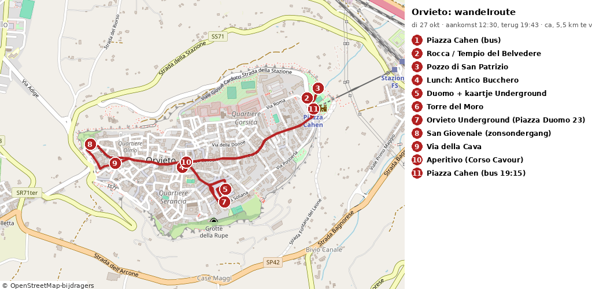</a><br><small>Wandelroute over straten, stops 2–11 (Piazza Cahen → rondje → Piazza Cahen, ca. 5,5 km). Tik om te vergroten. © OpenStreetMap-bijdragers</small>',
 stops:[
 {name:'Trein naar Orvieto en pendelbus naar boven',img:'img/145.jpg',time:'aankomst ca. 12:30 → bus → ca. 12:45 boven',leg:'Station Orvieto (Piazza Matteotti) → pendelbus naar Piazza Cahen, ca. 10 min',url:am('','Piazza%20Cahen%2C%20Orvieto','w'),
  text:'Vanuit de trein zie je Orvieto al liggen: een stad op een platte rots van vulkanisch tufsteen, zo’n 300 meter boven het dal van de Paglia. Etrusken woonden hier al (Velzna); in de middeleeuwen was het een vrije stadstaat en een geliefde schuilplaats van pausen. Omdat de kabelbaan (funicolare) in onderhoud is, neem je de <b>pendelbus</b> vanaf het plein voor het station (Piazza Matteotti) naar Piazza Cahen, elke 10 min.'},
 {name:'Tempio del Belvedere en de tuin van de Rocca',img:'img/147.jpg',time:'ca. 12:45–13:00',leg:'Piazza Cahen → tuin van de Rocca Albornoz en Tempio del Belvedere, ca. 0,1 km, 2 min lopen',url:am('','Tempio%20del%20Belvedere%2C%20Orvieto','w'),
  text:'Naast de put liggen de fundamenten van een <b>Etruskische tempel</b> uit de 5e eeuw v.Chr., gratis te bekijken vanaf het hek. Daarachter de <b>Rocca Albornoz</b>, een pauselijke burcht uit 1364; in de tuin op de muren kijk je ver uit over het dal en de spoorlijn. Gratis.'},
 {name:'Pozzo di San Patrizio',img:'img/146.jpg',time:'ca. 13:00–13:35',leg:'Tempio del Belvedere → Pozzo di San Patrizio, ca. 0,2 km, 3 min lopen',url:am('','Pozzo%20di%20San%20Patrizio%2C%20Orvieto','w'),
  text:'Na de plundering van Rome in 1527 vluchtte paus Clemens VII naar Orvieto en liet Antonio da Sangallo de Jongere deze put bouwen, zodat de stad een beleg kon doorstaan. Hij is 54 meter diep en heeft een <b>dubbele wenteltrap</b>: twee spiralen van elk 248 treden die elkaar nooit raken, zodat ezels met water naar boven konden zonder de dalende ezels tegen te komen. 72 ramen laten licht binnen. €6, okt 09:00–19:00. Reken op 30–40 minuten en goede benen voor de klim terug.'},
 {name:'Lunch: Umbrische trattoria',img:'img/149.jpg',time:'ca. 13:50–14:40',leg:'Pozzo → Corso Cavour → Via dei Cartari 4, ca. 1,1 km, 14–15 min lopen',url:am('','Via%20dei%20Cartari%204%2C%20Orvieto','w'),
  text:'<b>Tip: Antico Bucchero</b> (Via dei Cartari 4, vlak bij de Torre del Moro): Orvietaanse keuken met truffel en wild, o.a. pappardelle met wildzwijnragù, lunch 12:00–14:30, ca. €20–30 p.p., dinsdag open (orvietoviva.com, restaurantguru). Alternatieven: <b>Trattoria dell’Orso</b> (Via della Misericordia 18, 0763 341642), lunch ca. 12:15–15:00 <span class="open">één gids meldt dinsdag dicht, bel even</span>; <b>La Palomba</b> (Via Cipriano Manente 16, 0763 343395, Michelin-gids €, umbrichelli en duif): <b>bestellen tot 14:15</b>, dus krap, alleen als je vóór ca. 14:00 binnen bent. Drink er een glas <b>Orvieto Classico</b> bij. Trattoria del Moro Aronne en La Grotta zijn op dinsdag dicht.'},
 {name:'Duomo di Orvieto en de Cappella di San Brizio',img:'img/148.jpg',time:'ca. 14:45–15:25',leg:'Via dei Cartari → Corso Cavour → Via del Duomo → Piazza del Duomo, ca. 0,55 km, 7 min lopen',url:am('','Duomo%20di%20Orvieto','w'),
  text:'Via de <b>Corso Cavour</b>, de hoofdstraat, en de smalle Via del Duomo sta je opeens voor een van de mooiste gevels van Italië: gotisch, gestreept, vol gouden mozaïeken en reliëfs (1290–15e eeuw). Binnen zijn de muren gestreept met basalt en travertijn. Hoogtepunt is de <b>Cappella di San Brizio</b>, met de fresco’s van <b>Luca Signorelli</b> (1499–1504) over het einde der tijden en het Laatste Oordeel; Michelangelo kwam ze bestuderen. €8 (complex), okt 09:30–19:00. 🎟️ <b>Koop meteen je kaartje voor Orvieto Underground</b> (tour 16:00, €10) bij het kantoor op Piazza del Duomo 23, schuin tegenover de gevel, vóór je naar binnen gaat.'},
 {name:'Torre del Moro',img:'img/150.jpg',time:'ca. 15:35–15:50 (laatste klim 16:00, kort houden)',leg:'Piazza del Duomo → Via del Duomo → Corso Cavour 87, ca. 0,5 km, 6–7 min lopen',url:am('','Torre%20del%20Moro%2C%20Orvieto','w'),
  text:'De 47 meter hoge stadstoren (13e eeuw) op de kruising van de oude hoofdstraten. Je klimt (deels met een lift) naar de top, met het beste uitzicht van de stad: de Duomo, de daken en het dal rondom. €3,80, okt 10:30–16:30, laatste klim 16:00. Houd het kort: om 15:50 weer naar beneden, want de Underground-tour begint om 16:00 bij de Duomo.'},
 {name:'Orvieto Underground',img:'img/153.jpg',time:'ca. 15:55 bij het kantoor · tour 16:00–17:00',leg:'Torre del Moro → Via del Duomo → Piazza del Duomo 23, ca. 0,4 km, 5 min lopen',url:am('','Piazza%20del%20Duomo%2023%2C%20Orvieto','w'),
  text:'Onder Orvieto liggen meer dan 1200 grotten, gangen en putten, in de loop van 2500 jaar in het zachte tufsteen uitgehakt. Met een gids (ook in het Engels) daal je af in de rotswand onder de stad: Etruskische waterputten, middeleeuwse olijfpersen en kelders, en de <b>colombai</b>, wanden vol nisjes waarin duiven werden gehouden voor het vlees (vandaar <i>palomba</i> op het menu). Start bij het kantoor op <b>Piazza del Duomo 23</b>, ca. 1 uur, <b>€10</b>. Er zijn treden; neem een jas mee, het is er koel.'},
 {name:'San Giovenale: zonsondergang aan de rand van de rots',img:'img/152.jpg',time:'ca. 17:15–17:35 (zon onder ca. 17:13)',leg:'Piazza del Duomo → Via Malabranca → Piazza San Giovenale, ca. 1,0 km, 12–13 min lopen',url:am('','Chiesa%20di%20San%20Giovenale%2C%20Orvieto','w'),
  text:'Loop na de tour meteen door naar het westelijke puntje van de rots. Daar staat de <b>San Giovenale</b> (1004), de oudste kerk van Orvieto. Vanaf het pleintje kijk je over de rand van de rots naar het dal en de wijngaarden waar de Orvieto Classico vandaan komt. Je komt net na zonsondergang aan, in het mooiste avondrood.'},
 {name:'Via della Cava en het middeleeuwse kwartier',img:'img/151.jpg',time:'ca. 17:40–17:55',leg:'San Giovenale → Via della Cava, ca. 0,3 km, 4 min lopen',url:am('','Pozzo%20della%20Cava%2C%20Orvieto','w'),
  text:'Terug de stad in door het <b>Quartiere Medievale</b>, het stilste en mooiste deel van Orvieto: steegjes van tufsteen, bloempotten, kleine werkplaatsen, in de schemering met de lantaarns aan. Via della Cava loopt schuin omhoog richting Corso Cavour; halverwege ligt de <b>Pozzo della Cava</b>, een Etruskische put <span class="open">openingstijden niet gecontroleerd</span>.'},
 {name:'Aperitivo met Orvieto Classico',img:'img/154.jpg',time:'ca. 18:00–19:00',leg:'Via della Cava → Corso Cavour (bij de Torre del Moro / Piazza della Repubblica), ca. 0,45 km, 6 min lopen',url:am('','Corso%20Cavour%2C%20Orvieto','w'),
  text:'Sluit af met een glas <b>Orvieto Classico</b> in een enoteca of bar aan of rond de Corso Cavour, met een plankje Umbrische salumi en pecorino of een bruschetta met truffel. Een echt diner lukt niet: de trattoria’s gaan ’s avonds pas om 19:00–19:30 open, dus maak van het plankje je avondeten of neem iets mee voor in de trein <span class="open">geen specifieke bar gecontroleerd</span>. Vertrek <b>uiterlijk 19:00</b> naar Piazza Cahen.'},
 {name:'Pendelbus en trein terug naar Rome',img:'img/155.jpg',time:'bus ca. 19:15 · trein 19:43 → 21:35 · hotel ca. 22:15',leg:'Corso Cavour → Piazza Cahen, ca. 0,9 km, 12 min lopen · pendelbus naar het station, ca. 10 min',url:am('','Stazione%20di%20Orvieto','w'),
  text:'Neem rond <b>19:15</b> de pendelbus van Piazza Cahen naar het station (elke 10 min, tot 20:30), zodat je ruim op tijd bent voor de <b>trein van 19:43</b>, rechtstreeks naar <b>Roma Termini (21:35)</b>, regionaal en zonder reservering. In Termini neem je <b>metro A</b> richting Battistini naar <b>Cornelia</b> (ca. 20 min), dan 8 min lopen: rond <b>22:15</b> ben je in het hotel. Kijk vanuit de bus nog één keer om naar de stad op de rots.',extra:{url:'?stad=rome',label:'➡️ Woensdag: Colosseum en trein naar Bolzano'}}
 ]},
rome27alt:{
 title:'Rome (di 27 okt) – alternatief',sub:'Als je tóch in Rome blijft: Piazza del Popolo, Pincio, Villa Borghese, Spaanse Trappen, Trevi, Engelenburcht bij zonsondergang · ca. 5,5 km (Pantheon en Navona heb je maandag al gezien)',
 route:'https://www.google.com/maps/dir/Piazza+del+Popolo+Roma/Terrazza+del+Pincio+Roma/Tempio+di+Esculapio+Villa+Borghese/Scalinata+di+Trinit%C3%A0+dei+Monti/Fontana+di+Trevi/Castel+Sant%27Angelo/data=!4m2!4m1!3e2',
 note:'🔁 <b>Alternatief</b> voor de dagtrip naar Orvieto (bijvoorbeeld bij een treinstaking of slecht weer). Erheen: ca. 11:00 het hotel uit, metro A Cornelia → Flaminio (ca. 15 min). Terug: van de Engelenburcht 19 min lopen naar metro Ottaviano → Cornelia (ca. 7 min). 🎫 Trevi €2 (di 09:00–22:00). 🏰 Castel Sant’Angelo €18, di 09:00–19:30, laatste toegang 18:30 (coopculture.it). 🖼️ De Galleria Borghese is dinsdag open, alleen met reservering. '+'🏨 <b>c-hotels Club House Roma</b>, Via Andrea Alciato 14 (wijk Aurelio), zo 25 – wo 28 okt (3 nachten). Dichtstbijzijnde metro: <b>A Cornelia</b>, ca. 0,6 km, 8 min lopen. Met metro A ben je in ca. 15 min bij Flaminio/Piazza del Popolo en in ca. 20 min bij Termini; €1,50 per rit, tik in met je contactloze kaart.'+'<br><a href="img/route_rome27alt.png">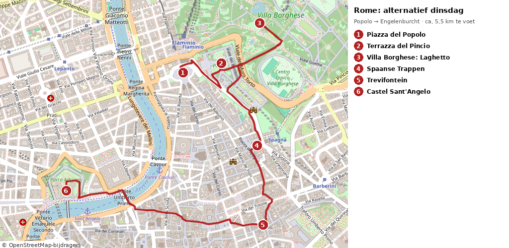</a><br><small>Wandelroute over straten, stops 1–6 (ca. 5,5 km). Tik om te vergroten. © OpenStreetMap-bijdragers</small>',
 stops:[
 {name:'Piazza del Popolo',img:'img/127.jpg',time:'ca. 11:30–11:45',leg:'Hotel (11:00) → metro A Cornelia (8 min lopen) → Flaminio, rechtstreeks, ca. 15 min · dan door de Porta del Popolo, 3 min lopen',url:am('','Piazza%20del%20Popolo%2C%20Roma','w'),
  text:'Het grote ovale plein bij de oude noordpoort van de stad, waar reizigers eeuwenlang Rome binnenkwamen. In het midden een Egyptische obelisk van ruim 3000 jaar oud, aan de zuidkant de “tweelingkerken”. In de Santa Maria del Popolo, naast de poort, hangen twee Caravaggio’s (gratis; <span class="open">openingstijden niet gecontroleerd</span>).'},
 {name:'Terrazza del Pincio',img:'img/128.jpg',time:'ca. 11:55–12:10',leg:'Piazza del Popolo → trappen omhoog naar het Pincio, ca. 0,8 km, 10 min lopen',url:am('','Terrazza%20del%20Pincio%2C%20Roma','w'),
  text:'Het mooiste gratis uitzicht van Rome: over Piazza del Popolo en de daken heen naar de koepel van de Sint-Pieter, waar je maandag was. Het terras hoort bij de Pinciotuin, aangelegd in de tijd van Napoleon.'},
 {name:'Villa Borghese: het meertje',img:'img/129.jpg',time:'ca. 12:20–12:50',leg:'Pincio → Laghetto, ca. 0,8 km, 10 min lopen',url:am('','Tempio%20di%20Esculapio%2C%20Villa%20Borghese%2C%20Roma','w'),
  text:'Het grootste stadspark van het centrum, ooit de lusttuin van kardinaal Scipione Borghese. Bij het meertje staat het tempeltje van Asklepios (18e eeuw) op een eilandje; je kunt een roeibootje huren <span class="open">optioneel, niet gecontroleerd in oktober</span>. Gratis, rustig, veel bankjes.'},
 {name:'Spaanse Trappen en Trinità dei Monti',img:'img/130.jpg',time:'ca. 13:10–14:20 (lunch)',leg:'Laghetto → via de Viale della Trinità dei Monti naar boven aan de trappen, ca. 1,4 km, 17 min lopen',url:am('','Scalinata%20di%20Trinit%C3%A0%20dei%20Monti%2C%20Roma','w'),
  text:'Je komt boven aan, bij de kerk Trinità dei Monti, en loopt de 135 treden af naar Piazza di Spagna met de bootvormige Barcaccia-fontein van Bernini’s vader. Zitten op de trappen is verboden (boete). <b>Lunch</b> in de straatjes eromheen (Via della Croce, Via Frattina): een tagliere met prosciutto en salame of een panino <span class="open">geen adres gecontroleerd</span>.'},
 {name:'Trevifontein',img:'img/131.jpg',time:'ca. 14:30–14:55',leg:'Piazza di Spagna → Fontana di Trevi, ca. 0,7 km, 9 min lopen',url:am('','Fontana%20di%20Trevi%2C%20Roma','w'),
  text:'De beroemdste fontein ter wereld (1732–1762), met de zeegod Oceanus in een triomfboog tegen de achterkant van een paleis. Gooi met je rechterhand een munt over je linkerschouder: dan kom je terug in Rome. Op het plein kijken is gratis; tot aan het water <b>€2</b> (dinsdag 09:00–22:00; kassa in Via della Stamperia, alleen met kaart, of online via fontanaditrevi.roma.it).'},
 {name:'Castel Sant’Angelo: dakterras bij zonsondergang',img:'img/144.jpg',time:'ca. 15:20–17:30 (zon onder ca. 17:13)',leg:'Trevi → Via dei Coronari → Ponte Sant’Angelo → Castel Sant’Angelo, ca. 1,8 km, 22–24 min lopen',url:am('','Castel%20Sant%27Angelo%2C%20Roma','w'),
  text:'Gisteren zag je het grafmonument van keizer Hadrianus (ca. 135 n.Chr.) van buiten; nu ga je naar binnen. Je loopt via een spiraalvormige Romeinse helling omhoog langs de pauselijke vertrekken naar het <b>dakterras met de bronzen engel</b>: uitzicht op de Sint-Pieter, de Tiber en de Engelenbrug, precies op tijd voor de zonsondergang. <b>€18</b>, laatste toegang 18:30. <b>Terug naar het hotel</b>: loop ca. 1,45 km (19 min) via Via Crescenzio naar <b>metro Ottaviano</b> en neem metro A richting Battistini rechtstreeks naar <b>Cornelia</b> (4 haltes, ca. 7 min), dan 8 min lopen; rond 18:15 ben je terug als je om 17:30 vertrekt.',extra:{url:'?stad=rome27',label:'⬅️ Terug naar de dagtrip Orvieto'}}
 ]},
rome:{
 title:'Rome → Bolzano (wo 28 okt)',sub:'Bagage in Termini · Colosseumtour 09:15 · San Pietro in Vincoli en Santa Maria Maggiore · FR 8520 14:45 → Bolzano 19:58 · avond in Bolzano',
 route:'https://www.google.com/maps/dir/Colosseo+Roma/Basilica+di+San+Pietro+in+Vincoli+Roma/Basilica+di+Santa+Maria+Maggiore+Roma/Stazione+Roma+Termini/data=!4m2!4m1!3e2',
 note:'🧭 <b>Dag:</b> uitchecken, bagage naar Termini, Colosseumtour 09:15, rustig langs twee gratis kerken terug naar Termini, <b>FR 8520 14:45 → Bolzano 19:58</b>, avondwandeling in Bolzano. Het Vaticaan en de Airbnb in Rome zijn geannuleerd. ⏰ Wintertijd: zonsondergang in Rome ca. 17:10, in Bolzano ca. 17:05; het is al donker als je aankomt. <span class="open">⚠️ Nog niet gereserveerd/geboekt: FR 8520 (€13) en het hotel in Bolzano</span>. <span class="open">⚠️ Controleer in de Interrail-app of je pass nog genoeg reisdagen heeft: vanaf 28 okt zijn dat 5 reisdagen (28, 29, 31 okt, 1 en 2 nov), plus 25 okt (en eventueel 26 okt) als je dan reist; de pass loopt t/m 2 nov (door jou bevestigd)</span>.<br><a href="img/route_rome.png">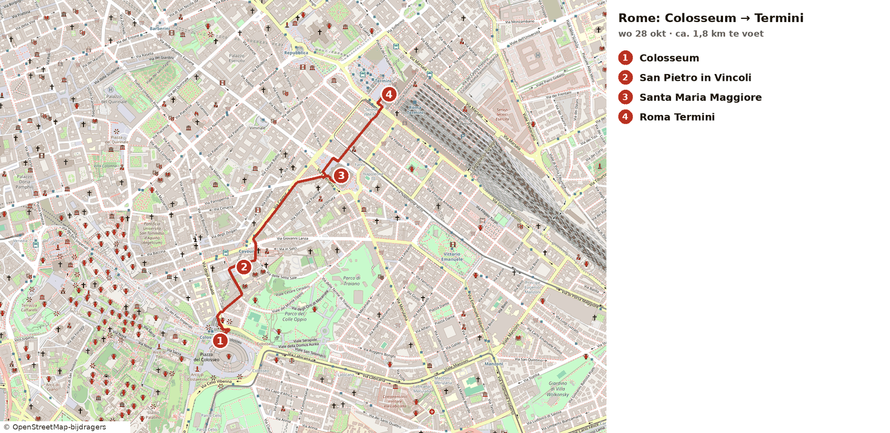</a><br><small>Wandelroute over straten, stops 4–7 (Colosseum → Termini, ca. 1,8 km). Tik om te vergroten. © OpenStreetMap-bijdragers</small><br><a href="img/route_bolzano.png">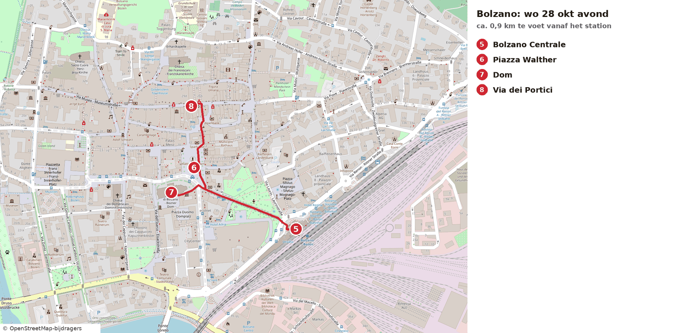</a><br><small>Wandelroute over straten, stops 8–11 (ca. 0,9 km). Tik om te vergroten. © OpenStreetMap-bijdragers</small>',
 stops:[
 {name:'Uitchecken, metro A Cornelia → Termini',img:'img/140.jpg',time:'ca. 07:45 → 08:15',leg:'Hotel → metro Cornelia, ca. 0,6 km, 8 min lopen · metro A richting Anagnina, 10 haltes, ca. 20 min rechtstreeks',url:am('','Stazione%20Roma%20Termini','w'),
  text:'Rond 07:45 uitchecken en met je bagage naar metro Cornelia. In de spits kan de metro vol zijn; rond 08:00 valt het meestal mee. Je stapt uit in Termini.'},
 {name:'Bagage afgeven: KiPoint-depot bij spoor 24',img:'img/141.jpg',time:'ca. 08:20–08:30',leg:'Metro Termini → hal → uitgang Via Giolitti → KiPoint ter hoogte van spoor 24, ca. 5–8 min lopen',url:am('','Via%20Giovanni%20Giolitti%2040%2C%20Roma','w'),
  text:'Het officiële bagagedepot van Termini heet <b>KiPoint – Deposito bagagli</b> (kibag.it). Het zit op de begane grond aan de kant van <b>Via Giolitti</b> (Via Giolitti 40), ter hoogte van <b>spoor 24</b>, naast de autoverhuur. Volg vanuit de hal de blauwe borden <i>Deposito bagagli / Luggage storage</i>: aan de linkerkant de uitgang Via Giolitti, langs de stoep voorbij de COIN en dan de tunnel in. <b>Open dagelijks 07:00–21:00</b> (station RFI en kibag.it). <b>Prijs per stuk: €6 voor de eerste 5 uur, daarna €1 per uur (6e t/m 12e uur)</b>. Afgeven ca. 08:25 en ophalen ca. 14:00 is ongeveer 5½ uur, dus ca. <b>€7 per stuk</b>. Inclusief toegang tot de stationstoiletten. Online vooraf boeken kan op kibag.it, maar is niet nodig <span class="open">tarief na het 5e uur van secundaire bronnen; kibag.it noemt alleen “vanaf €6”</span>. Grote tassen mogen niet mee het Colosseum in.'},
 {name:'Metro B Termini → Colosseo',img:'img/103.jpg',time:'ca. 08:40 → 08:50',leg:'Terug de hal in naar metro B (richting Laurentina), 2 haltes, ca. 5 min · uitgang staat recht tegenover het Colosseum',url:am('','Colosseo%2C%20Roma','w'),
  text:'Metro B rijdt van Termini via Cavour naar <b>Colosseo</b>. Als je naar buiten komt, sta je meteen tegenover het Colosseum. Je bent er ruim 20 minuten voor de tour.'},
 {name:'Colosseum: tour 09:15',img:'img/103.jpg',time:'09:15 tour',leg:'Verzamelpunt volgens je ticket (nog niet gecontroleerd)',url:am('','Colosseo%2C%20Roma','w'),
  text:'Het grootste amfitheater van de Romeinse wereld: gebouwd onder keizer Vespasianus en ingewijd in het jaar 80, plaats voor ca. 50.000 toeschouwers. Je tour met toegang tot de arena-vloer (Gladiator Floor) begint om 09:15. <span class="open">Verzamelpunt, einde van de tour (ca. 11:30–12:30) en of een rugzak mee mag: check je bevestigingsmail; nu geschat</span>. Grote tassen en koffers mogen niet naar binnen en er is geen garderobe: daarom staat je bagage bij KiPoint in Termini <span class="open">maximale maat van een tas: check je ticket</span>.'},
 {name:'San Pietro in Vincoli: de Mozes van Michelangelo',img:'img/104.jpg',time:'ca. 12:00',leg:'Colosseum → Piazza di San Pietro in Vincoli, ca. 0,5 km, 7 min lopen (iets bergop)',url:am('','Basilica%20di%20San%20Pietro%20in%20Vincoli%2C%20Roma','w'),
  text:'Een kleine basiliek op de Esquilino, gratis te bezoeken, met het grafmonument van paus Julius II. Daarin zit de beroemde Mozes van Michelangelo (rond 1515): let op de hoorntjes op zijn hoofd, een oude vertaalfout van het Hebreeuwse “stralen”. Verder liggen hier de ketenen van Sint-Petrus (“vincoli”). <span class="open">Openingstijden (vaak ca. 08:00–12:30 en 15:00–18:00) niet gecontroleerd; schiet je er in de siësta langs, dan is het dicht</span>.'},
 {name:'Santa Maria Maggiore',img:'img/105.jpg',time:'ca. 12:30',leg:'San Pietro in Vincoli → Santa Maria Maggiore, ca. 0,7 km, 9 min lopen',url:am('','Basilica%20di%20Santa%20Maria%20Maggiore%2C%20Roma','w'),
  text:'Eén van de vier pauselijke hoofdbasilieken, uit de 5e eeuw, met mozaïeken uit die tijd boven de zuilenrij en een rijk vergulde plafond (het eerste goud uit Amerika, volgens de overlevering een geschenk van de Spaanse koning). Het plein is gratis, de basiliek ook; er geldt een kledingvoorschrift (schouders en knieën bedekt).'},
 {name:'Roma Termini: lunch en trein 14:45',img:'img/106.jpg',time:'14:00 → 14:45',leg:'Santa Maria Maggiore → Roma Termini, ca. 0,6 km, 8 min lopen',url:am('','Stazione%20Roma%20Termini','w'),
  text:'Het grote hoofdstation van Rome. <b>Haal eerst je bagage op bij KiPoint</b> (Via Giolitti, spoor 24, zie boven). Haal hier je lunch (hartig: panino met prosciutto of salame, of iets in het Mercato Centrale in het station <span class="open">niet gecontroleerd</span>) en ga om 14:15–14:30 naar de hal: het perron verschijnt ca. 15–20 min voor vertrek. <b>FR 8520 Roma Termini 14:45 → Bolzano 19:58</b>, rechtstreeks (ca. 5 u 13), Frecciarossa, <b>reservering €13 verplicht</b> (Interrail, 1e klas) <span class="open">reservering nog niet gedaan, of dat zelf controleren</span>. Op 28 okt rijdt de staking nog niet (die is van 29 okt 21:00 tot 30 okt 20:59).'},
 {name:'Aankomst Bolzano Centrale',img:null,time:'19:58',leg:'FR 8520 rechtstreeks Rome → Bolzano',url:am('','Stazione%20di%20Bolzano','w'),
  text:'Bolzano (Bozen) is Zuid-Tirol: Italiaans en Duits tegelijk, met bergen rondom de stad. Het station ligt aan de rand van het centrum; alles wat je vanavond wilt zien ligt binnen 1 km. Loop eerst het centrum in (je tassen heb je bij je) en ga pas daarna naar het hotel.'},
 {name:'Piazza Walther',img:'img/107.jpg',time:'ca. 20:10',leg:'Station → Piazza Walther, ca. 0,35 km, 5 min lopen',url:am('','Piazza%20Walther%2C%20Bolzano','w'),
  text:'Het centrale plein van Bolzano, genoemd naar de minnezanger Walther von der Vogelweide, met zijn standbeeld in het midden en de bergen erachter. Gratis, en ’s avonds mooi verlicht.'},
 {name:'Duomo van Bolzano',img:'img/109.jpg',time:'ca. 20:25',leg:'Piazza Walther → Duomo, ca. 0,2 km, 2 min lopen',url:am('','Duomo%20di%20Bolzano','w'),
  text:'De gotische dom (14e–15e eeuw) naast het plein, met een kleurig betegeld dak in Zuid-Tiroler stijl en een toren van zandsteen. Van buiten gratis; binnen kort kijken als hij nog open is <span class="open">openingstijden niet gecontroleerd</span>.'},
 {name:'Via dei Portici (Laubengasse) en diner',img:'img/108.jpg',time:'ca. 20:35–21:30',leg:'Duomo → Via dei Portici, ca. 0,4 km, 5 min lopen',url:am('','Via%20dei%20Portici%2C%20Bolzano','w'),
  text:'De middeleeuwse winkelstraat van Bolzano, met arcaden langs beide kanten en gekleurde gevels. Eet hier hartig en regionaal: <b>speck</b>, kaas en <b>canederli</b> (knoedels) horen bij Zuid-Tirol. <span class="open">Restaurant niet gecontroleerd: kies ter plekke een gelegenheid met een geopende keuken na 20:30</span>.'},
 {name:'Naar het hotel (buiten het centrum)',img:null,time:'ca. 21:30',leg:'Centrum → hotel: regionale trein, bus of taxi (schatting: Four Points ca. 3,7 km, B&B Hotel ca. 2,3 km)',url:am('','Four%20Points%20by%20Sheraton%20Bolzano','r'),
  text:'Vannacht in Bolzano: <b>Four Points by Sheraton</b> of <b>B&B Hotel Bolzano</b>. <span class="open">Nog niet geboekt; prijs niet gecontroleerd</span>. Let op: beide hotels liggen buiten het historische centrum (Four Points in het industriegebied, ca. 3,7 km; B&B ca. 2,3 km). Een hotel in het centrum is een alternatief als je morgenochtend niet terug wilt reizen. <span class="open">Taxi of bus laat ’s avonds niet gecontroleerd</span>.',extra:{url:'?stad=innsbruck',label:'➡️ Volgende dag: Bolzano → Innsbruck'}}
 ]},
innsbruck29:{
 title:'Innsbruck: rustig aankomen (do 29 okt)',sub:'Aankomst 14:30 · hotel · Maria-Theresien-Straße · Goldenes Dachl en Altstadt · zonsondergang aan de Inn · Weisses Rössl',
 route:'https://www.google.com/maps/dir/Innsbruck+Hauptbahnhof/Hilton+Garden+Inn+Innsbruck+Tivoli/Annas%C3%A4ule+Innsbruck/Goldenes+Dachl+Innsbruck/Innbr%C3%BCcke+Innsbruck/Weisses+R%C3%B6ssl+Kiebachgasse+8+Innsbruck/data=!4m2!4m1!3e2',
 note:'📅 <a href="?stad=innsbruck29">do 29</a> · <a href="?stad=innsbruck30">vr 30</a> · <a href="?stad=innsbruck31">za 31</a><br>🧭 <b>Dag:</b> rustig aankomen, <b>zonder Innsbruck Card</b> (die start morgen). Je reist vandaag met je <b>24-uurs OV-pas</b> (bus en tram). Alles met <i>(optioneel)</i> sla je zonder spijt over.<br>🌤️ <b>Weer:</b> 6–12°C, bewolkt, vrijwel droog (13% kans op regen). 🌇 Zonsondergang <b>17:02</b>; daarna koelt het snel af.'+'<br><a href="img/route_innsbruck.png">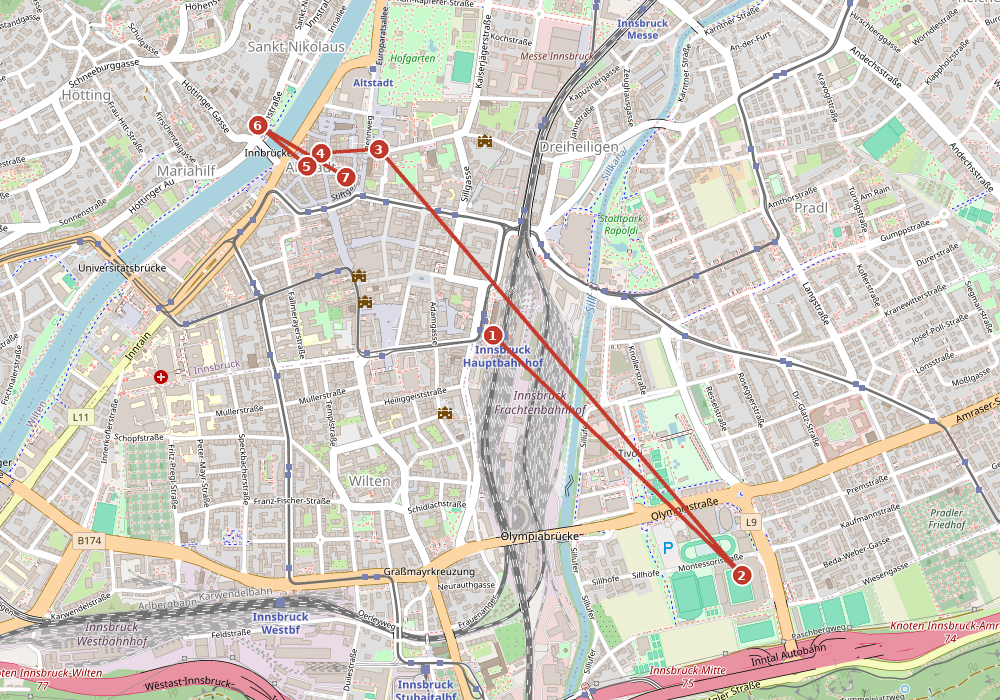</a><br><small>Donderdag, stops 1–7. Tik om te vergroten. © OpenStreetMap-bijdragers</small>',
 stops:[
 {name:'Aankomst Innsbruck Hauptbahnhof',img:'img/111.jpg',time:'do 14:30',leg:'Railjet Bolzano 12:45 → Brennerpas → Innsbruck Hbf',url:am('','Innsbruck%20Hauptbahnhof','w'),
  text:'Welkom in Tirol. Vandaag geen kaart en geen haast: eerst naar het hotel, even bijkomen, dan op je gemak de stad in. 🎫 Je hebt een <b>24-uurs OV-pas</b> (bus en tram) gekocht van je ÖBB-tegoed: die geldt vanaf je eerste rit 24 uur, dus ook nog vrijdagochtend.'},
 {name:'Hilton Garden Inn Innsbruck Tivoli: inchecken',img:'img/156.jpg',time:'15:15, daarna rust',leg:'Hbf → Olympiastraße 41: bus 505 (richting Hall in Tirol) tot Olympiaworld, ca. 10 min · of lijn J/M tot Tivoli Stadion · lopen ca. 20 min (1,5 km)',url:am('','Hilton%20Garden%20Inn%20Innsbruck%20Tivoli%2C%20Olympiastra%C3%9Fe%2041%2C%20Innsbruck','w'),
  text:'Je hotel voor 29 en 30 okt. Vraag om een rustige kamer, en of je zaterdag na het uitchecken je tassen kunt laten staan tot ca. 14:00 <span class="open">niet gecontroleerd</span>. Rust ca. een halfuur uit en vertrek <b>rond 15:45</b> met bus/tram (je OV-pas) naar het centrum.'},
 {name:'Maria-Theresien-Straße en Annasäule',img:'img/157.jpg',time:'ca. 16:00',leg:'Hotel → Annasäule: bus/tram naar Maria-Theresien-Straße, ca. 15 min · of lopen ca. 1,6 km (20 min)',url:am('','Annas%C3%A4ule%2C%20Innsbruck','w'),
  text:'De brede hoofdstraat met de Nordkette als decor recht achter de gevels. In het midden de <b>Annasäule</b> (1706). Rustig slenteren, eventueel een koffie. Gratis.'},
 {name:'Goldenes Dachl en de Altstadt',img:'img/113.jpg',time:'ca. 16:15–16:45',leg:'Annasäule → Herzog-Friedrich-Straße 15, ca. 0,35 km, 5 min lopen',url:am('','Goldenes%20Dachl%2C%20Innsbruck','w'),
  text:'De erker met 2.657 vergulde dakpannen, rond 1500 gebouwd voor keizer Maximiliaan I. Daaromheen de smalle straatjes met arcaden van de Altstadt. Van buiten bekijken is gratis; de musea doe je eventueel zaterdag met je kaart.'},
 {name:'(Optioneel) Stadtturm',img:'img/158.jpg',time:'ca. 16:30, alleen als je zin hebt',leg:'Goldenes Dachl → Herzog-Friedrich-Straße 21, 50 m',url:am('','Stadtturm%2C%20Innsbruck','w'),
  text:'133 treden naar de omloop op 31 m, met uitzicht over de daken en de bergen. <b>Dagelijks 10:00–17:00</b>, vandaag los <b>€4,50</b>; zaterdag zit hij in je kaart. Ook de <b>Hofkirche</b> (ma–za tot 17:00, laatste toegang 16:30, los €9) kan zaterdag gratis <span class="open">tijd van de laatste toegang Stadtturm niet gecontroleerd</span>.'},
 {name:'Innbrücke bij zonsondergang',img:'img/171.jpg',time:'ca. 16:50–17:15',leg:'Altstadt → Innbrücke, ca. 0,3 km, 4 min lopen',url:am('','Innbr%C3%BCcke%2C%20Innsbruck','w'),
  text:'De brug waaraan Innsbruck zijn naam dankt, met de bonte gevels van Mariahilf tegen de berg. <b>Zonsondergang 17:02</b>. Daarna wordt het snel koud: loop dan door naar het restaurant.'},
 {name:'Diner: Weisses Rössl',img:'img/168.jpg',time:'do vanaf 17:30',leg:'Innbrücke → Kiebachgasse 8, ca. 0,3 km, 4 min lopen · terug met bus/tram of taxi, ca. 15 min',url:am('','Weisses%20R%C3%B6ssl%2C%20Kiebachgasse%208%2C%20Innsbruck','w'),
  text:'Gasthof in een huis van 600 jaar oud met houten Tiroler Stuben: Wiener Schnitzel, Gröstl, Knödel en wild. <b>Ma–za 11:30–14:00 en 17:30–21:30</b> (roessl.at). Reserveren via <b>+43 512 583057</b>, vraag een rustig tafeltje in de Stube <span class="open">niet gereserveerd</span>. Op tijd naar bed: morgen om 08:45 de berg op.',extra:{url:'?stad=innsbruck30',label:'➡️ Volgende dag: Nordkette en Ambras (vr 30 okt)'}},
 ]},
innsbruck30:{
 title:'Innsbruck: Nordkette en Schloss Ambras (vr 30 okt)',sub:'Innsbruck Card start 08:45 · Hungerburg → Seegrube → Hafelekar · Alpenzoo · Sightseer naar Schloss Ambras · (optioneel) Bergisel · diner',
 route:'https://www.google.com/maps/dir/Hungerburgbahn+Congress+Innsbruck/Alpenzoo+Innsbruck/Schloss+Ambras+Innsbruck/Bergisel+Sprungschanze+Innsbruck/Seilergasse+5+Innsbruck/data=!4m2!4m1!3e3',
 note:'📅 <a href="?stad=innsbruck29">do 29</a> · <a href="?stad=innsbruck30">vr 30</a> · <a href="?stad=innsbruck31">za 31</a><br>🧭 <b>Dag:</b> de grote bergdag, met de Innsbruck Card. Vaste punten: Nordkette, Alpenzoo, Ambras; de rest is <i>(optioneel)</i>.<br>🚡 <b>Nordkette open t/m 1 nov</b> (dicht 2–19 nov), elke 15 min: Hungerburgbahn <b>ma–vr 07:15–19:15</b>, Seegrubenbahn <b>08:30–17:30</b>, Hafelekarbahn <b>09:00–16:45</b>.<br>🎫 <b>Innsbruck Card 48 u, €71,10</b>. Kopen: in de ÖBB-app via <b>Shop → ÖBB Plus</b> met je voucher, <b>startdatum 30 okt</b> (een online gekochte kaart moet je op die datum voor het eerst laten scannen). Wissel de voucher om bij de <b>Tourismus Information (Burggraben 3)</b> of bij de <b>Stadtturm</b>. Start <b>ca. 08:45 bij de Hungerburgbahn</b>; de kaart loopt precies 48 uur, tot zo 08:45, dus heel zaterdag tot je trein zit erin. Inbegrepen: bus, tram en Sightseer onbeperkt, en elke attractie één keer. Direct door het poortje bij Nordkette, Alpenzoo, Patscherkofel, Swarovski en Bergisel; elders krijg je aan de kassa een kaartje.<br>💶 <b>Waarde</b> (losse prijzen) van de vaste punten vr en za: Nordkette €56 + Alpenzoo €16 + Sightseer €25 + Ambras €18 + Swarovski met shuttle €38 = <b>€153</b>, plus bus. Met de optionele punten (Bergisel €12, Hofburg €16, Hofkirche €9, Stadtturm €4,50) ca. €200. Jij betaalt €71,10.<br>🌤️ <b>Weer:</b> 5–13°C, droog (0%), <b>’s ochtends mist in het dal</b>. Op de Hafelekar ca. −2°C om 08:00, 0°C om 10:00, 2°C om 14:00, weinig wind; helder tot ca. 11:00, daarna meer wolken. 🧣 Muts, handschoenen en een warme jas mee. 🌇 Zonsondergang <b>17:00</b>.'+'<br><a href="img/route_innsbruck2.png">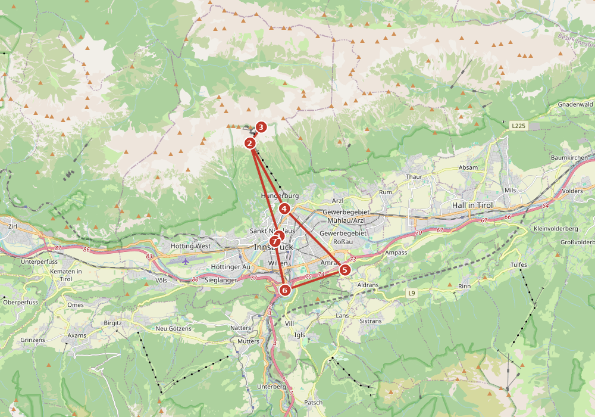</a><br><small>Vrijdag, stops 1–7. Tik om te vergroten. © OpenStreetMap-bijdragers</small>',
 stops:[
 {name:'Hungerburgbahn: start je Innsbruck Card',img:'img/161.jpg',time:'vr ca. 08:45',leg:'Hotel → dalstation Congress (Rennweg 3): bus/tram naar Congress of Museumstraße, ca. 15 min (los €3,30, of Welcome Card)',url:am('','Hungerburgbahn%20Congress%2C%20Rennweg%203%2C%20Innsbruck','w'),
  text:'Ontbijt rond 07:45. Hier scan je de kaart voor het eerst: vanaf nu loopt de 48 uur. Je hebt <b>één keer op en neer tot de Hafelekar</b> (los €56). Vroeg gaan loont: boven de ochtendmist is het helder, en vanaf ca. 11:00 komen de wolken. Hungerburgbahn <b>ma–vr 07:15–19:15</b>, elke 15 min. <span class="ok">✅ Nordkette open: seizoen t/m 1 nov, dicht 2–19 nov</span>.'},
 {name:'Seegrube (1.905 m)',img:'img/162.jpg',time:'ca. 09:10',leg:'Hungerburg → Seegrubenbahn, ca. 8 min · ma–vr 08:30–17:30',url:am('','Seegrube%2C%20Innsbruck','w'),
  text:'Overstappen, met zicht over het Inndal; vaak kijk je hier ’s ochtends op een wolkenzee. Op de terugweg een warme koffie op het terras <span class="open">openingstijden restaurant niet gecontroleerd</span>.'},
 {name:'Hafelekar: Top of Innsbruck (2.256 m)',img:'img/163.jpg',time:'ca. 09:30–10:30',leg:'Seegrube → Hafelekarbahn, ca. 5 min · ma–vr 09:00–16:45 · topstation → Hafelekarspitze ca. 10–15 min lopen (optioneel)',url:am('','Hafelekar%2C%20Innsbruck','w'),
  text:'De stad 1.700 m onder je, de Karwendel-toppen aan de andere kant. Het pad naar de top kan glad zijn; <b>de Klettersteig is dicht wegens sneeuw</b>. <b>Rond 10:00 ca. 0°C</b>. Neem de tijd, en daarna rustig terug naar de Hungerburg.'},
 {name:'Alpenzoo',img:'img/172.jpg',time:'ca. 11:00–12:15',leg:'Hungerburg → Alpenzoo, ca. 10 min lopen bergaf · Weiherburggasse 37a · daarna bus W naar de Marktplatz (kaart)',url:am('','Alpenzoo%20Innsbruck%2C%20Weiherburggasse%2037a%2C%20Innsbruck','w'),
  text:'De hoogstgelegen dierentuin van Europa, alleen met dieren uit de Alpen: wolven, lynx, beren, steenbokken en lammergieren. <b>Wintertijd dagelijks 09:00–17:00</b> (los €16, met de kaart direct naar binnen). Je kunt ook met de Hungerburgbahn naar beneden (je talrit) <span class="open">of je die bij halte Alpenzoo mag onderbreken is niet gecontroleerd; bus W kan altijd</span>.'},
 {name:'Schloss Ambras, met lunch',img:'img/164.jpg',time:'ca. 13:10–16:00',leg:'Marktplatz → Sightseer 12:35 → Schloss Ambras 13:10 (kaart) · Schlossstraße 20 · naar het hotel ca. 10 min met de bus',url:am('','Schloss%20Ambras%2C%20Schlossstra%C3%9Fe%2020%2C%20Innsbruck','w'),
  text:'Eerst lunch in <b>Café Ferdinand</b> in het kasteel (10:00–17:00). Daarna het renaissancekasteel van aartshertog Ferdinand II: de oudste <b>Kunst- und Wunderkammer</b> ter wereld, harnassen en de Spaanse Zaal. <b>Laatste dagen: de Habsburgse portretgalerij is open t/m 31 okt</b>, in november is het kasteel dicht. <b>Dagelijks 10:00–17:00</b> (los €18). Daarna even rusten in het hotel, dat hier vlakbij ligt.'},
 {name:'(Optioneel) Bergisel bij zonsondergang',img:'img/165.jpg',time:'ca. 16:41–17:45',leg:'Sightseer Ambras 16:30 → Tirol Panorama/Bergisel 16:41 · terug: tram 1 naar het centrum, ca. 15 min',url:am('','Bergisel%20Sprungschanze%2C%20Innsbruck','w'),
  text:'Alleen als je nog energie hebt: met de lift omhoog in de skischans van Zaha Hadid naar het platform op 50 m, zonsondergang om 17:00. <b>Oktober dagelijks 09:00–18:00</b>, laatste toegang 17:30 (los €12, direct naar binnen). Kan ook zaterdagochtend.'},
 {name:'Diner vr: Die Wilderin',img:'img/169.jpg',time:'vr ca. 18:30',leg:'Altstadt, Seilergasse 5 · terug naar het hotel met bus/tram (kaart)',url:am('','Die%20Wilderin%2C%20Seilergasse%205%2C%20Innsbruck','w'),
  text:'Klein restaurant met moderne Tiroler keuken, wild en vis uit de regio (2 Hauben Gault&amp;Millau). <b>Di–zo 17:00–24:00</b>. Reserveren via <b>+43 512 562728</b>, vraag een rustig tafeltje <span class="open">niet gereserveerd; hoe rustig het is niet gecontroleerd</span>.<br>🍽️ <b>Alternatief, eenvoudiger:</b> <b>Gasthaus Anich</b>, Anichstraße 15, warme keuken ma–vr 17:30–21:00, +43 512 570450. Of nog een keer het Weisses Rössl.<br>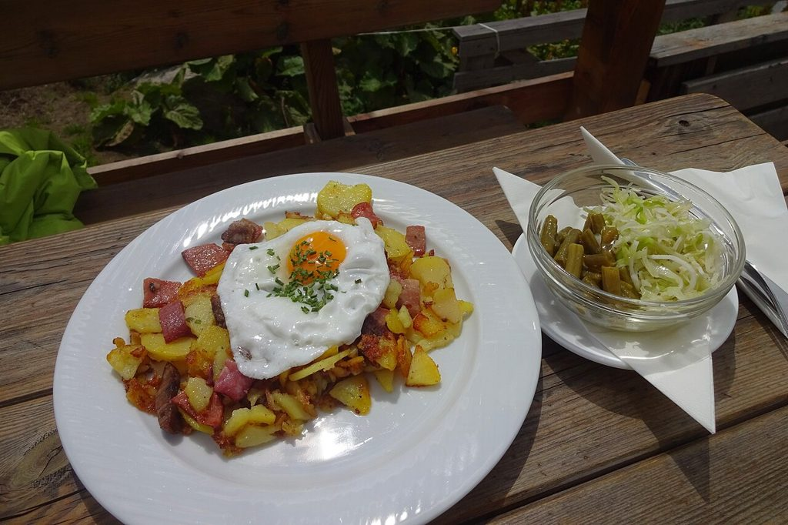',extra:{url:'?stad=innsbruck31',label:'➡️ Volgende dag: Swarovski en vertrek (za 31 okt)'}},
 ]},
innsbruck31:{
 title:'Innsbruck: Swarovski en vertrek (za 31 okt)',sub:'Rustig ontbijt · Swarovski Kristallwelten (shuttle 10:20 → 13:35) · of (optioneel) Hofburg en Hofkirche, Patscherkofel, fietsen · trein ca. 14:42',
 route:'https://www.google.com/maps/dir/Hilton+Garden+Inn+Innsbruck+Tivoli/Innsbruck+Hauptbahnhof/Swarovski+Kristallwelten+Wattens/Innsbruck+Hauptbahnhof/data=!4m2!4m1!3e3',
 note:'📅 <a href="?stad=innsbruck29">do 29</a> · <a href="?stad=innsbruck30">vr 30</a> · <a href="?stad=innsbruck31">za 31</a><br>🧭 <b>Dag:</b> één vast punt (Swarovski Kristallwelten) en dan verder naar Heidelberg. Je Innsbruck Card geldt nog tot zo 08:45, dus ook bus, tram en de shuttle zijn gratis.<br>🚆 <b>Vertrek:</b> ca. 14:42 naar München (ca. 1 u 45) en door naar Heidelberg <span class="open">nog niet gepland of geboekt</span>. Je kunt ook langer blijven: de Railjets rijden elke twee uur om :42 (bijv. 16:42), en de kaart dekt alles wat je hier nog doet.<br>🌤️ <b>Weer:</b> 3–10°C, ’s ochtends mist, kleine kans op een bui (18%). 🌇 Zonsondergang <b>16:59</b>.'+'<br><a href="img/route_innsbruck3.png">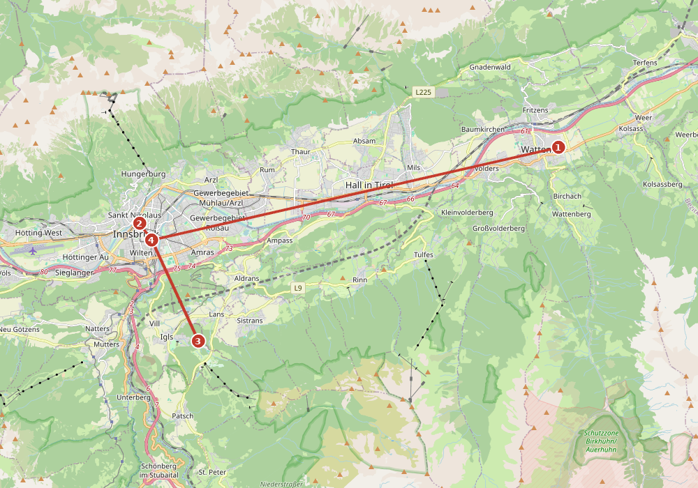</a><br><small>Zaterdag, stops 1–4 (2 en 3 zijn alternatieven). Tik om te vergroten. © OpenStreetMap-bijdragers</small>',
 stops:[
 {name:'Za: Swarovski Kristallwelten',img:'img/167.jpg',time:'za shuttle 10:20 → terug 13:35 (Hbf 13:59)',leg:'Rustig ontbijt, uitchecken ca. 09:45, bus naar het Hbf · E-shuttle (kaart) vanaf het busstation, ca. 28 min · terug vanaf Wattens 13:35',url:am('','Swarovski%20Kristallwelten%2C%20Wattens','r'),
  text:'Het ene vaste punt van zaterdag: de kristalwereld achter de reus met de groene haardos, met kunstzalen vol licht en de kristalwolk in de tuin. <b>Dagelijks 09:00–19:00</b>, laatste toegang 18:00. Shuttle en entree los <b>€38</b>, met de kaart gratis en direct door het poortje. Shuttle uit Innsbruck 08:40, <b>10:20</b>, 12:40; terug 11:35, <b>13:35</b>, 15:35 (kristallwelten.swarovski.com). Neem je tassen mee naar het Hbf en zet ze daar in een kluisje <span class="open">kluisjes op het Hbf niet gecontroleerd</span>.'},
 {name:'(Optioneel) za: rustig in de stad',img:'img/166.jpg',time:'za ochtend, in plaats van Swarovski',leg:'Hofburg, Rennweg 1 · Hofkirche, Universitätsstraße 2 · alles op loopafstand',url:am('','Hofburg%20Innsbruck%2C%20Rennweg%201%2C%20Innsbruck','w'),
  text:'Liever niet de bus in? Blijf in de stad, alles met de kaart: de <b>Hofburg</b> (dagelijks 09:00–17:00, met Maximilian1), de <b>Hofkirche</b> met de 28 bronzen reuzen (ma–za 09:00–17:00), het Goldenes Dachl-museum en de Stadtturm (beide 10:00–17:00).<br>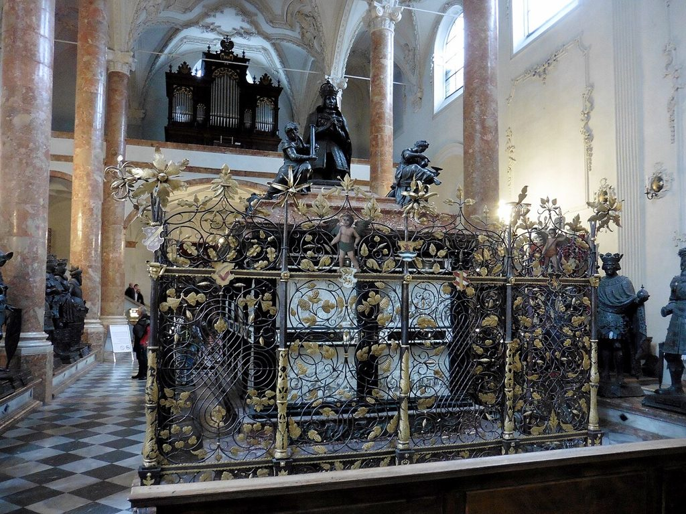'},
 {name:'(Optioneel) za: Patscherkofel of fietsen',img:'img/173.jpg',time:'za 09:00–12:00',leg:'Bus J (kaart) naar Igls, Patscherkofelbahn, ca. 30 min · fietsen: Die Boerse, Leopoldstraße 4',url:am('','Patscherkofelbahn%2C%20R%C3%B6merstra%C3%9Fe%2081%2C%20Igls','r'),
  text:'Bij helder weer: Innsbrucks huisberg aan de zuidkant (2.246 m), met zicht op de Nordkette. <b>Dagelijks 09:00–17:00 t/m 1 nov</b>, los €33. Of <b>3 uur gratis een stadsfiets</b> bij Die Boerse (za 09:00–18:00, zolang er fietsen zijn).'},
 {name:'Za: trein naar München en Heidelberg',img:'img/111.jpg',time:'za ca. 14:42',leg:'Innsbruck Hbf → München Hbf (ca. 1 u 45) → Heidelberg',url:am('','Innsbruck%20Hauptbahnhof','w'),
  text:'Railjets naar München vertrekken elke twee uur om <b>:42</b> (12:42 → 14:26, <b>14:42</b> → 16:27). Na Swarovski past 14:42 rustig: haal je tassen uit het kluisje en eet nog iets op het station <span class="open">treinen nog niet gekozen of geboekt; tijden en overstap in München niet gecontroleerd</span>. Je kaart geldt nog, dus ook de bus is gratis.',extra:{url:'?stad=heidelberg',label:'➡️ Za 31 okt: Innsbruck → München → Heidelberg'}},
 ]},
wurzburg:{
 title:'Innsbruck → Würzburg (za 31 okt)',sub:'Trein 10:42 via München → Würzburg 14:52 · Alte Mainbrücke · Festung Marienberg · Marktplatz, Dom en Residenz',
 route:'https://www.google.com/maps/dir/Würzburg+Hauptbahnhof/AC+Hotel+by+Marriott+Würzburg/Alte+Mainbrücke+Würzburg/Festung+Marienberg+Würzburg/Marktplatz+Würzburg/Residenz+Würzburg/data=!4m2!4m1!3e2',
 note:'🧭 <b>Za 31 okt:</b> in de ochtend met de trein van Innsbruck naar Würzburg, middag en avond in de stad. <span class="open">⚠️ Tijden van de treinreis niet bevestigd (bahn.de niet bereikbaar). Hotel (AC Hotel by Marriott) niet geboekt</span>. ⏰ CET, zonsondergang ca. 17:00, donker rond 17:45. 🎃 Het is Halloween/Reformationstag; op zondag 1 nov (Allerheiligen) is bijna alles dicht.<br><a href="img/route_wurzburg.png">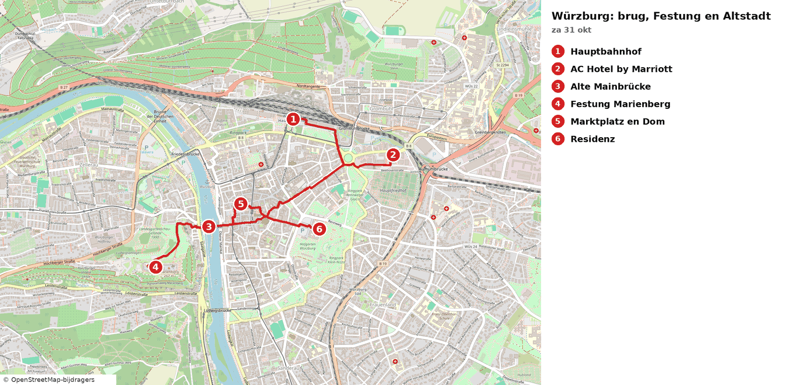</a><br><small>Wandelroute over straten (ca. 6 km), stops 1–6. Tik om te vergroten. © OpenStreetMap-bijdragers</small>',
 stops:[
 {name:'Innsbruck → München → Würzburg',img:null,time:'10:42 → 14:52',leg:'Hotel → Innsbruck Hbf, ca. 1,6 km, 22 min lopen (vertrek 10:00)',url:am('','Innsbruck%20Hauptbahnhof','w'),
  text:'Vertrek <b>Innsbruck 10:42</b>, overstap in <b>München</b>, aankomst <b>Würzburg Hbf 14:52</b> (ca. 4 u 10). <span class="open">Treinnummers, overstaptijd en tijden niet bevestigd: bahn.de/DB Navigator was niet bereikbaar; check morgen of op de dag zelf</span>. Reserveren is in Duitsland en Oostenrijk <i>optioneel</i> (ca. €3–8 per trein); op zaterdag zijn de ICE’s vaak vol, dus overweeg het. De Italiaanse staking is dan voorbij en raakt je niet.'},
 {name:'Würzburg Hauptbahnhof en hotel (AC Hotel by Marriott)',img:null,time:'14:52 → ca. 15:30',leg:'Hbf → AC Hotel by Marriott, ca. 1,3 km, 16 min lopen',url:am('','AC%20Hotel%20by%20Marriott%20W%C3%BCrzburg','w'),
  text:'Zet je tassen bij het hotel (inchecken ca. 15:00 <span class="open">niet gecontroleerd</span>). Het hotel is lid van Marriott Bonvoy (Gold Elite). <span class="open">Nog niet geboekt; prijs niet gecontroleerd</span>. Alternatief: een Mercure-hotel aan de Main <span class="open">niet gecontroleerd</span>.'},
 {name:'Alte Mainbrücke',img:'img/116.jpg',time:'ca. 15:50',leg:'Hotel → Alte Mainbrücke, ca. 2,0 km, 26 min lopen (of bus/tram)',url:am('','Alte%20Mainbr%C3%BCcke%2C%20W%C3%BCrzburg','w'),
  text:'De oude stenen brug over de Main (15e eeuw, in 1703–1730 barok versierd) met 12 gigantische heiligenbeelden. Hier drinken de Würzburgers een glas Franken-wijn op de brug (“Brückenschoppen”). Gratis, met uitzicht op de Festung Marienberg op de heuvel.'},
 {name:'Festung Marienberg',img:'img/117.jpg',time:'ca. 16:15–17:15',leg:'Alte Mainbrücke → Festung, ca. 0,95 km, vlak 8 min, de klim omhoog ca. 15 min',url:am('','Festung%20Marienberg%2C%20W%C3%BCrzburg','w'),
  text:'De vesting boven de stad: sinds ca. 704 een burcht, later het paleis van de prins-bisschoppen. Gratis te lopen: de buitenterreinen, de Echterhof en de uitkijkpunten met uitzicht over de stad, de Main en de wijngaarden. <span class="open">De Kernburg en de Fürstengarten zijn volgens mijn onderzoek gesloten (bouwwerkzaamheden); ik beschrijf alleen het gratis buitengebied. Controleer ter plekke</span>. Zonsondergang ca. 17:00.'},
 {name:'Marktplatz en Dom St. Kilian',img:'img/119.jpg',time:'ca. 17:45',leg:'Festung → Marktplatz, ca. 1,4 km, 15 min lopen',url:am('','Marktplatz%2C%20W%C3%BCrzburg','w'),
  text:'Het hart van de stad: de rode Marienkapelle aan de Marktplatz (gotisch, ca. 1377–1480) en niet ver daarvandaan de <b>Dom St. Kilian</b>, een romaanse kathedraal met de torens vlak in het centrum. Gratis te bekijken. Eet hartig en lokaal: Fränkische Bratwurst, Schäufele (varkensschouder) of een worst-broodje op de markt <span class="open">niet gecontroleerd; geen vis</span>.'},
 {name:'Residenz',img:'img/118.jpg',time:'ca. 18:15',leg:'Dom → Residenz, ca. 0,55 km, 7 min lopen',url:am('','Residenz%20W%C3%BCrzburg','w'),
  text:'Het barokke paleis van de prins-bisschoppen (Balthasar Neumann, 1720–1744), UNESCO-werelderfgoed, met een groot plein met fonteinen ervoor. Het paleis is binnen betaald (<i>optioneel</i>), maar de gevel en de hofgarten zie je gratis van buiten <span class="open">openingstijden hofgarten niet gecontroleerd</span>. Daarna naar het hotel, ca. 1,2 km (16 min).'}
 ]},
heidelberg:{
 title:'Würzburg → Heidelberg (zo 1 nov) en terug naar Amsterdam (ma 2 nov)',sub:'Trein Würzburg → Heidelberg · Hauptstraße · Alte Brücke · Philosophenweg bij zonsondergang · maandag naar huis',
 route:'https://www.google.com/maps/dir/Heidelberg+Hauptbahnhof/Hauptstraße+Heidelberg/Marktplatz+Heidelberg/Schloss+Heidelberg/Alte+Brücke+Heidelberg/Philosophenweg+Heidelberg/data=!4m2!4m1!3e2',
 note:'🧭 <b>Zo 1 nov:</b> trein Würzburg → Heidelberg, middag en avond in de Altstadt, avond op de Philosophenweg. <b>Ma 2 nov:</b> terug naar Amsterdam. ⏰ CET, zonsondergang ca. 17:05. 🕯️ Zondag 1 nov is Allerheiligen; winkels zijn dicht, maar de straten en uitkijkpunten zijn gratis. <span class="open">⚠️ Tijden zondag en maandag niet bevestigd; hotel niet geboekt</span>.<br><a href="img/route_heidelberg.png">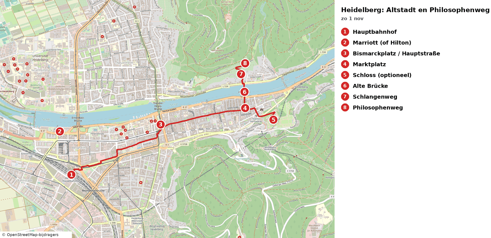</a><br><small>Wandelroute over straten (Hbf → Hauptstraße → Philosophenweg), stops 1–8; het hotel (2) ligt bij het station. Tik om te vergroten. © OpenStreetMap-bijdragers</small>',
 stops:[
 {name:'Würzburg → Heidelberg',img:null,time:'ochtend/middag ⚠️',leg:'Hotel → Würzburg Hbf (ca. 1,3 km, 16 min lopen)',url:am('','W%C3%BCrzburg%20Hauptbahnhof','w'),
  text:'Treinreis van ca. 2 uur (Würzburg → Heidelberg Hbf). <span class="open">Zondagtijden en overstappen (en Allerheiligen, 1 nov) niet bevestigd: bahn.de niet bereikbaar; check de dag ervoor of ’s ochtends in DB Navigator</span>. Zondag rijdt vaak een zwakker rooster; reserveren in Duitsland is <i>optioneel</i> (ca. €3–6).'},
 {name:'Heidelberg Hbf en hotel (Marriott of Hilton)',img:null,time:'ca. 13:00',leg:'Hbf → hotel, ca. 0,9 km, 12 min lopen',url:am('','Heidelberg%20Marriott%20Hotel','w'),
  text:'Zet je tassen neer bij het <b>Heidelberg Marriott Hotel</b> (Bonvoy Gold Elite) of bij het <b>Hilton Heidelberg</b> (Hilton Honors Gold). <span class="open">Nog niet geboekt; prijs niet gecontroleerd</span>. Het Marriott ligt dicht bij het station; naar het centrum is het ca. 2,7 km.'},
 {name:'Hauptstraße en Bismarckplatz',img:'img/121.jpg',time:'ca. 14:00',leg:'Hotel → Hauptstraße, ca. 2,7 km, 36 min lopen (of tram/bus ca. 10 min)',url:am('','Hauptstra%C3%9Fe%2C%20Heidelberg','w'),
  text:'Eén van de langste voetgangersstraten van Europa (ca. 1,6 km): winkels, cafés en studentenkroegen langs de oude stad, met het kasteel op de achtergrond. Het is er druk op zondag; winkels zijn dicht, de straat zelf niet. Gratis.'},
 {name:'Marktplatz en Heiliggeistkirche',img:'img/122.jpg',time:'ca. 15:00',leg:'Hauptstraße → Marktplatz, ca. 0,3 km, 4 min lopen',url:am('','Marktplatz%2C%20Heidelberg','w'),
  text:'Het plein onder het kasteel, met de gotische Heiliggeistkirche (15e eeuw) en de Herkulesbrunnen. Van buiten gratis; de kerk is binnen vaak open <span class="open">openingstijd niet gecontroleerd</span>. Eet hier hartig: bratwurst of salame/ham-panino <span class="open">niet gecontroleerd</span>.'},
 {name:'Schloss Heidelberg (optioneel)',img:'img/125.jpg',time:'ca. 15:30',leg:'Marktplatz → Schloss, ca. 0,6 km, steil omhoog, ca. 10 min lopen (schatting)',url:am('','Schloss%20Heidelberg','w'),
  text:'De rode zandstenen kasteelruïne boven de stad, een van de bekendste ruïnes van Duitsland (verwoest in de 17e en 18e eeuw). Het kasteelterrein is <b>betaald</b> (<i>optioneel</i>) <span class="open">prijs/tijd niet gecontroleerd</span>. Het uitzicht over de stad en de Neckar krijg je ook gratis vanaf de Alte Brücke en de Philosophenweg; sla dit gerust over.'},
 {name:'Alte Brücke (Karl-Theodor-Brücke)',img:'img/120.jpg',time:'ca. 16:15',leg:'Schloss → Alte Brücke, ca. 0,85 km, 11 min lopen',url:am('','Alte%20Br%C3%BCcke%2C%20Heidelberg','w'),
  text:'De stenen brug over de Neckar (1788) met het Brückentor, de poort met twee torens. Aan de stadszijde staat het apenbeeldje (Brückenaffe); aanraken brengt volgens de overlevering geluk. Gratis, en de foto van het kasteel vanaf de brug is de mooiste van de stad.'},
 {name:'Schlangenweg',img:'img/123.jpg',time:'ca. 16:35',leg:'Alte Brücke → Schlangenweg, ca. 0,3 km, ca. 15 min lopen (stijle trap) (schatting)',url:am('','Schlangenweg%2C%20Heidelberg','w'),
  text:'Het slingerende pad omhoog aan de noordoever van de Neckar, tegenover de oude stad; het bochtige pad met trappen geeft steeds beter uitzicht. Gratis, wel stevig klimmen.'},
 {name:'Philosophenweg (zonsondergang)',img:'img/124.jpg',time:'ca. 16:55–17:30',leg:'Schlangenweg → Philosophenweg, ca. 0,3 km, 4 min lopen',url:am('','Philosophenweg%2C%20Heidelberg','w'),
  text:'De wandelweg waar filosofen en dichters liepen, met het beroemde uitzicht over de oude stad, de Alte Brücke en het kasteel. Zonsondergang ca. 17:05; je loopt gratis, maar neem een zaklamp of telefoonlicht mee voor het afdalen (het wordt snel donker). Daarna terug naar de stad en hartig eten in de Altstadt.'},
 {name:'Maandag 2 nov: Heidelberg → Amsterdam Centraal',img:null,time:'ca. 09:43 → 14:29 ⚠️',leg:'Hotel → Heidelberg Hbf, ca. 0,9 km, 12 min lopen',url:am('','Heidelberg%20Hauptbahnhof','w'),
  text:'Voorbeeldverbinding: <b>Heidelberg Hbf 09:43 → Amsterdam Centraal 14:29</b> (ca. 4 u 45). <span class="open">Tijden en overstap(pen) niet bevestigd: bahn.de niet bereikbaar. Check de verbinding in DB Navigator of NS en reserveer indien gewenst</span>. Je pass is geldig t/m 2 nov (door jou bevestigd). Daarna thuis in Koog aan de Zaan. <span class="open">⚠️ Controleer in de Interrail-app of je pass nog genoeg reisdagen heeft: vanaf 28 okt zijn dat 5 reisdagen (28, 29, 31 okt, 1 en 2 nov), plus 25 okt (en eventueel 26 okt) als je dan reist; de pass loopt t/m 2 nov (door jou bevestigd)</span>.'}
 ]},
interlaken:{
 title:'Interlaken tussen de treinen',sub:'Start en eind: station Interlaken Ost · 11:54 aankomst, 16:04 terug · bergen, meren en de Aare',
 route:'https://www.google.com/maps/dir/Interlaken+Ost/Harderbahn+Interlaken/Harder+Kulm/Unterseen+Stadthausplatz/H%C3%B6hematte+Interlaken/Interlaken+Ost',
 note:'⏱️ <b>Tijdvak ca. 4 uur</b> (11:54–16:04). 🚠 Harderbahn: elk halfuur, retour ca. CHF 44, met Interrail 50% korting (ca. CHF 22). Ben om 15:45 terug op het station.',
 stops:[
 {name:'Station Interlaken Ost',img:'img/21.jpg',time:'aankomst 11:54',leg:'Start',url:am('','Interlaken%20Ost','w'),
  text:'Je stapt uit de panoramatrein midden tussen de Brienzersee en de bergen. Lockers vind je in het station als je bagage bij je hebt.'},
 {name:'Harderbahn',img:'img/16.jpg',time:'ca. 5 min lopen',leg:'Interlaken Ost → over de Aare → dalstation',url:am('','Harderbahn%2C%20Interlaken','w'),
  text:'Over de brug over de turquoise Aare loop je naar het dalstation. Het rode kabelspoor klimt in 10 minuten steil door het bos omhoog; ga rechts zitten voor het mooiste zicht.'},
 {name:'Harder Kulm',img:'img/17.jpg',time:'10 min met de kabelbaan',leg:'Dalstation → Harder Kulm (1322 m)',url:am('','Harder%20Kulm','w'),
  text:'Vanaf de Zwei-Seen-Steg, een uitkijkbrug boven de afgrond, zie je beide meren tegelijk: de Thunersee en de Brienzersee, met Eiger, Mönch en Jungfrau recht tegenover je. Het restaurant in sprookjesstijl heeft een terras met hetzelfde uitzicht. Trek er ca. 1–1,5 uur voor uit.'},
 {name:'Langs de Aare',img:'img/20.jpg',time:'ca. 15 min lopen',leg:'Dalstation → Aarepromenade → Unterseen',url:am('','Unterseen%2C%20Stadthausplatz','w'),
  text:'Het pad langs de rivier volgt het melkachtig groene gletsjerwater tussen de twee meren. Rustig, groen en vol bankjes, met de bergen telkens op de achtergrond.'},
 {name:'Unterseen oude stad',img:'img/18.jpg',time:'ca. 3 min lopen',leg:'Aare → Stadthausplatz',url:am('','Stadthausplatz%2C%20Unterseen','w'),
  text:'Het middeleeuwse stadje aan de overkant van de Aare is veel ouder dan Interlaken. Je ziet er houten huizen met diepe daken, de stadskerk met zijn slanke toren en het pleintje rond het Stadthaus.'},
 {name:'Höhematte en Höheweg',img:'img/19.jpg',time:'ca. 15 min lopen',leg:'Unterseen → Höhematte',url:am('','H%C3%B6hematte%2C%20Interlaken','w'),
  text:'Dit grote, open grasveld midden in het dorp mag nooit bebouwd worden, zodat je er altijd het onbelemmerde uitzicht op de besneeuwde Jungfrau hebt. Aan de Höheweg staan belle-époque-hotels, zoals het statige Victoria-Jungfrau. Hier landen ook de paragliders.'},
 {name:'Terug naar Interlaken Ost',img:null,time:'ca. 15 min lopen',leg:'Höheweg → Interlaken Ost',url:am('','Interlaken%20Ost','w'),
  text:'Je loopt in een rechte lijn over de Höheweg terug naar het station, voor de Luzern–Interlaken Express van 16:04.'}
 ]},
luzern:{
 title:'Avondwandeling Luzern',sub:'Van station Luzern naar het Renaissance Lucerne (Pilatusstrasse 15) · bruggen, de Reuss en het meer',
 route:'https://www.google.com/maps/dir/Bahnhof+Luzern/Kapellbr%C3%BCcke/Weinmarkt+Luzern/M%C3%A4nnliturm+Luzern/Spreuerbr%C3%BCcke/Jesuitenkirche+Luzern/Renaissance+Lucerne+Hotel,+Pilatusstrasse+15',
 note:'🌆 Aankomst 17:55. De Museggmauer is tot 19:00 gratis open (t/m 1 nov). Ga er dus vóór 18:45 naartoe. Zonsondergang is rond 18:40, daarna zijn de bruggen en de oude stad prachtig verlicht.',
 stops:[
 {name:'Station Luzern, KKL en het meer',img:'img/22.jpg',time:'aankomst 17:55',leg:'Start: Bahnhof Luzern',url:am('','Bahnhof%20Luzern','w'),
  text:'Naast het station staat het KKL van Jean Nouvel, met zijn enorme zwevende dak boven het water. Loop even naar de kade voor het uitzicht over het Vierwaldstättersee, met de Pilatus en de Rigi op de achtergrond.'},
 {name:'Kapellbrücke',img:'img/23.jpg',time:'ca. 4 min lopen',leg:'Station → Kapellbrücke',url:am('','Kapellbr%C3%BCcke%2C%20Luzern','w'),
  text:'Dit is de oudste overdekte houten brug van Europa, uit 1365, met bloembakken en de achthoekige Wasserturm. In de nok hangen 17e-eeuwse driehoekige schilderijen over de geschiedenis van de stad.'},
 {name:'Weinmarkt en de oude pleinen',img:'img/24.jpg',time:'ca. 4 min lopen',leg:'Kapellbrücke → Kornmarkt → Weinmarkt',url:am('','Weinmarkt%2C%206004%20Luzern','w'),
  text:'Via de Kornmarkt met het renaissance-raadhuis kom je bij de Weinmarkt. Dit middeleeuwse plein heeft een gotische fontein en gevels vol kleurrijke fresco’s.'},
 {name:'Museggmauer en Männliturm',img:'img/25.jpg',time:'ca. 10 min lopen (bergop)',leg:'Weinmarkt → Männliturm',url:am('','M%C3%A4nnliturm%2C%20Luzern','w'),
  text:'Dit is de langste nog intacte stadsmuur van Zwitserland, met negen torens. Klim de Männliturm op voor een panorama over de daken, het meer en de bergen. Tot 19:00 open; daarna zie je de verlichte muur vanaf de stad.'},
 {name:'Spreuerbrücke',img:'img/26.jpg',time:'ca. 8 min lopen (bergaf)',leg:'Musegg → Spreuerbrücke',url:am('','Spreuerbr%C3%BCcke%2C%20Luzern','w'),
  text:'Deze tweede houten brug is stiller en authentieker, en heeft een dodendans-schilderijencyclus uit 1626. Je kijkt over de kolkende Reuss en het Nadelwehr, een stuw die al sinds 1860 met de hand wordt bediend.'},
 {name:'Reussoever en Jesuitenkirche',img:'img/27.jpg',time:'ca. 5 min lopen',leg:'Spreuerbrücke → Jesuitenkirche',url:am('','Jesuitenkirche%2C%20Luzern','w'),
  text:'Langs de rivier loop je naar de barokke Jesuitenkirche met zijn twee uivormige torens. Vooral in het donker, als de oevers en de Kapellbrücke verlicht zijn, is het een van de mooiste plekken van Luzern.'},
 {name:'Renaissance Lucerne',img:null,time:'ca. 5 min lopen',leg:'Jesuitenkirche → Pilatusstrasse 15',url:am('','Renaissance%20Lucerne%20Hotel%2C%20Pilatusstrasse%2015%2C%206002%20Luzern','w'),
  text:'Via de Seebrücke loop je naar je hotel aan de Pilatusstrasse. Let op: de boeking is nog niet bevestigd, dus controleer die.'}
 ]},
zurich:{
 title:'Wandelroute Zürich',sub:'Start en eind: Zürich HB (bagage in een kluisje) · architectuur, uitzichten, de Limmat en het meer',
 route:'https://www.google.com/maps/dir/Z%C3%BCrich+HB/Paradeplatz+Z%C3%BCrich/Lindenhof+Z%C3%BCrich/Fraum%C3%BCnster+Z%C3%BCrich/M%C3%BCnsterbr%C3%BCcke+Z%C3%BCrich/Grossm%C3%BCnster+Z%C3%BCrich/Quaibr%C3%BCcke+Z%C3%BCrich/B%C3%BCrkliplatz+Z%C3%BCrich/Z%C3%BCrich+HB',
 note:'🚶 <b>Hele route te voet</b>, ca. 4 km vanaf en naar Zürich HB. 🚋 Daarna met de tram naar je hotel: stadstrams vallen niet onder je Interrail-pas, koop een ZVV-ticket zone 110 via de SBB-app of automaat.',
 stops:[
 {name:'Zürich Hauptbahnhof',img:'img/15.jpg',time:'aankomst met de Railjet',leg:'Start: Zürich HB',url:am('','Z%C3%BCrich%20HB','w'),
  text:'Het neorenaissance-station uit 1871 heeft een indrukwekkende hal, met de kleurrijke beschermengel van Niki de Saint Phalle die boven de reizigers zweeft. Je bagage zet je in een SBB-kluisje, ca. CHF 6–12 per dag afhankelijk van de maat; je betaalt met kaart of Twint. De kluisjes staan o.a. in de onderdoorgang ShopVille en bij de sporen.'},
 {name:'Bahnhofstrasse en Paradeplatz',img:'img/9.jpg',time:'ca. 10 min lopen',leg:'Zürich HB → over de Bahnhofstrasse → Paradeplatz',url:am('','Paradeplatz%2C%20Z%C3%BCrich','w'),
  text:'Op de chicste winkelstraat van Europa staan statige 19e-eeuwse panden, juweliers en banken onder de lindebomen. Aan het Paradeplatz zie je het neorenaissance-hoofdkantoor van de Credit Suisse, en bij Confiserie Sprüngli kun je even binnenlopen voor een Luxemburgerli.'},
 {name:'Lindenhof',img:'img/10.jpg',time:'ca. 8 min lopen',leg:'Paradeplatz → Lindenhof',url:am('','Lindenhof%2C%208001%20Z%C3%BCrich','w'),
  text:'Dit is een verhoogd plein onder oude lindebomen, op de plek van een Romeins fort. Vanaf de muur heb je hét klassieke uitzicht over de Limmat, de daken van het Niederdorf, het Grossmünster en de ETH. In de lindeschaduw spelen locals schaak op het grote bord.'},
 {name:'Fraumünster',img:'img/11.jpg',time:'ca. 6 min lopen',leg:'Lindenhof → via de Schipfe → Fraumünster',url:am('','Fraum%C3%BCnster%2C%20M%C3%BCnsterhof%202%2C%208001%20Z%C3%BCrich','w'),
  text:'Je loopt eerst door de Schipfe, het oudste wijkje aan de rivier. De slanke groene torenspits van de Fraumünster gaat terug tot een abdij uit 853. Binnen zitten de beroemde glas-in-loodramen van Marc Chagall (1970); vooral bij zon gloeit het koor in blauw en groen. Er geldt een kleine toegangsprijs, en vroeg in de avond is de kerk dicht.'},
 {name:'Münsterbrücke en de Limmat',img:'img/12.jpg',time:'ca. 2 min lopen',leg:'Fraumünster → Münsterbrücke',url:am('','M%C3%BCnsterbr%C3%BCcke%2C%208001%20Z%C3%BCrich','w'),
  text:'Op deze sierlijke stenen boogbrug uit 1838 sta je midden tussen de twee beroemdste torens van de stad. Onder je stroomt de heldere, groenblauwe Limmat, en met wat geluk zie je zwanen en meeuwen. Het is een van de mooiste fotoplekken van Zürich.'},
 {name:'Grossmünster en Limmatquai',img:'img/13.jpg',time:'ca. 3 min lopen',leg:'Münsterbrücke → Grossmünster',url:am('','Grossm%C3%BCnster%2C%208001%20Z%C3%BCrich','w'),
  text:'De romaanse kerk met de dubbele torens is hét symbool van Zürich; hier begon Zwingli de Reformatie. Je kunt de Karlsturm beklimmen (187 treden, kleine toegangsprijs) voor een prachtig uitzicht op het meer en, bij helder weer, de Alpen. Slenter daarna langs de gildehuizen aan het Limmatquai.'},
 {name:'Quaibrücke, Bürkliplatz en het Zürichsee',img:'img/14.jpg',time:'ca. 8 min lopen langs de rivier',leg:'Grossmünster → Limmatquai → Quaibrücke → Bürkliplatz',url:am('','B%C3%BCrkliplatz%2C%208001%20Z%C3%BCrich','w'),
  text:'Hier gaat de Limmat over in het meer. Vanaf de brug kijk je zo over het water naar de Alpen; bij zonsondergang (in oktober rond 18:45) is het prachtig. Aan de promenade bij de Bürkliterrasse liggen de rondvaartboten. Wil je meer natuur, loop dan nog 10 minuten langs het meer naar het Arboretum en terug.'},
 {name:'Terug naar Zürich HB',img:null,time:'ca. 12 min lopen',leg:'Bürkliplatz → Bahnhofstrasse → Zürich HB',url:am('','Z%C3%BCrich%20HB','w'),
  text:'Loop over de Bahnhofstrasse terug naar het station en haal je bagage uit het kluisje.',
  extra:{label:'🚋 Tram naar Moxy Zurich (Badenerstrasse 537)',url:am('','Moxy%20Zurich%2C%20Badenerstrasse%20537%2C%208048%20Z%C3%BCrich','r')}}
 ]},salzburg:{
 title:'Wandelroute Salzburg',sub:'Start en eind: Hampton by Hilton Salzburg Messe · architectuur, uitzichten, natuur en de Salzach',
 route:'https://www.google.com/maps/dir/Hampton+by+Hilton+Salzburg+Messe/Mirabellgarten+Salzburg/Kapuzinerkloster+Salzburg/Makartsteg+Salzburg/Getreidegasse+9+Salzburg/Caf%C3%A9+Tomaselli+Salzburg/Salzburger+Dom/Festung+Hohensalzburg/Museum+der+Moderne+M%C3%B6nchsberg/Augustiner+Br%C3%A4u+M%C3%BClln/Hampton+by+Hilton+Salzburg+Messe',
 note:'💶 <b>Let op:</b> de Mönchsberglift (ca. €4) en de vesting met de Festungsbahn (ca. €19) vallen niet onder je dagkaart.',
 stops:[
 {name:'Schloss Mirabell en Mirabellgarten',img:'img/1.jpg',time:'ca. 20 min met de bus',leg:'Hampton by Hilton → Mirabellplatz (OV)',url:am(H,'Mirabellplatz%20Salzburg','r'),
  text:"Mirabell is een barok paleis uit 1606 met de beroemde marmeren Engeltrap. In de tuin vind je bloemperken, fonteinen en het Pegasusbeeld, met de Dom en de vesting in de verte. Hier zong Maria in The Sound of Music 'Do-Re-Mi'."},
 {name:'Kapuzinerberg',img:'img/2.jpg',time:'ca. 20 min lopen',leg:'Mirabellgarten → Kapuzinerkloster',url:am('Mirabellgarten%20Salzburg','Kapuzinerkloster%20Salzburg','w'),
  text:'Via de Linzergasse kom je bij een steile trap langs kruiswegkapelletjes naar een bosrijke stadsberg met oude stadsmuren, en vaak zie je er gemzen. Vanaf het uitkijkpunt bij het klooster kijk je zo op de oude stad, de vesting en de Salzach.'},
 {name:'Makartsteg en Getreidegasse',img:'img/3.jpg',time:'ca. 20 min lopen',leg:'Kapuzinerkloster → Makartsteg → Getreidegasse',url:am('Kapuzinerkloster%20Salzburg','Getreidegasse%209%20Salzburg','w'),
  text:'Je loopt over de voetgangersbrug vol liefdesslotjes boven de turquoise Salzach. Daarna kom je in de Getreidegasse, met middeleeuwse huizen, smeedijzeren uithangborden en verborgen binnenplaatsjes. Op nummer 9 staat het gele geboortehuis van Mozart.'},
 {name:'Café Tomaselli (apfelstrudel)',img:'img/4.jpg',time:'ca. 3 min lopen',leg:'Getreidegasse → Café Tomaselli',url:am('Getreidegasse%209%20Salzburg','Caf%C3%A9%20Tomaselli%20Salzburg','w'),
  text:"Dit is het oudste nog bestaande koffiehuis van Oostenrijk, uit 1700, met houten lambrisering, krantenrekken en obers in het wit. Alle gebak wordt in eigen huis gemaakt, en de apfelstrudel krijgt in reviews vaak 'de beste ooit'. Probeer een plekje op het balkon te krijgen, met uitzicht op de Alter Markt. Een melange erbij en het is perfect. Open tot 19:00."},
 {name:'Salzburger Dom en Residenzplatz',img:'img/5.jpg',time:'ca. 3 min lopen',leg:'Café Tomaselli → Dom',url:am('Caf%C3%A9%20Tomaselli%20Salzburg','Salzburger%20Dom','w'),
  text:'De Dom is een vroegbarokke kathedraal uit 1628, met een witmarmeren gevel en een enorme koepel. Mozart werd hier gedoopt. Op de Residenzplatz staat de grootste barokfontein ten noorden van de Alpen. Loop ook even het kerkhof van St. Peter in, met catacomben in de rotswand.'},
 {name:'Festung Hohensalzburg',img:'img/6.jpg',time:'ca. 5 min lopen naar de Festungsbahn',leg:'Dom → Festungsbahn',url:am('Salzburger%20Dom','Festungsbahn%20Salzburg','w'),
  text:'Met het kabeltreintje ben je in 1 minuut boven, lopend duurt het ongeveer 20 minuten. Dit is een van de grootste volledig bewaarde burchten van Europa, uit de 11e eeuw. Vanaf de bastions zie je de daken van de stad en de kronkelende Salzach, met daarachter de Alpen.'},
 {name:'Mönchsberg en Museum der Moderne',img:'img/7.jpg',time:'ca. 30 min lopen',leg:'Vesting → over de Mönchsberg → Museum der Moderne',url:am('Festung%20Hohensalzburg','Museum%20der%20Moderne%20M%C3%B6nchsberg','w'),
  text:'Je volgt een bospad langs oude verdedigingsmuren. Vanaf het terras van het museum heb je een prachtig uitzicht over de oude stad, de rivier en de Kapuzinerberg. Daarna ga je met de Mönchsberglift in 30 seconden door de rots naar beneden.'},
 {name:'Augustiner Bräu Mülln',img:'img/8.jpg',time:'ca. 10 min lopen langs de Salzach',leg:'Mönchsberglift → Augustiner Bräu',url:am('M%C3%B6nchsberglift%20Salzburg','Augustiner%20Br%C3%A4u%20M%C3%BClln%20Salzburg','w'),
  text:'Dit is een kloosterbrouwerij uit 1621, met een biertuin onder kastanjebomen en bier uit stenen kruiken.'},
 {name:'Terug naar het Hampton by Hilton',img:null,time:'ca. 20 min met de bus',leg:'Augustiner Bräu → hotel (OV)',url:am('Augustiner%20Br%C3%A4u%20M%C3%BClln%20Salzburg',H,'r'),
  text:'Met je dagkaart neem je de bus terug naar je hotel in Liefering.'}
 ]}};

const D=(d,city,items)=>({d,city,items});
const SCHEMA=[
D('2026-10-14','Amsterdam → nachttrein',['🚆 <b>Nightjet NJ 40421</b> richting Wenen · rijtuig 431, bed 91, Single (incl. ontbijt)','🎫 Boeking 1955 0056 6576 9066 · ticket 2870 4188 2514 6932','🌙 Nacht in de trein']),
D('2026-10-15','Salzburg',['🚆 Uitstappen in Salzburg 06:46 (NJ 40421)','🏨 Hampton by Hilton Salzburg Messe <span class="ok">geboekt</span>','⭐ Wandelroute Salzburg → zie tab Salzburg']),
D('2026-10-16','Zürich',['🚆 Railjet Salzburg → Zürich (direct, zonder reservering)','🧳 Bagage in kluisje op Zürich HB','🏨 Moxy Zurich <span class="ok">geboekt</span> (€148,66)','⭐ <a href="?stad=zurich">Wandelroute Zürich</a> (vanaf Zürich HB)','🚋 Daarna tram naar het Moxy']),
D('2026-10-17','Zürich → Luzern → Interlaken',['🚋 Tram 2 vanaf Letzigrund ±08:31 → Zürich HB (of S-Bahn; ZVV-ticket nodig)','🚆 <b>IR 70</b> Zürich HB 09:07 (spoor 6) → Luzern 09:51','🚆 <b>Luzern–Interlaken Express PE 2920</b> Luzern 10:06 (spoor 13) → Interlaken Ost 11:54 · 1e klas panorama, rijtuig 7, stoel 320 · ref PYN6JY (CHF 16)','⭐ <a href="?stad=interlaken" class="btn" style="margin:6px 0">🏔️ Gids Interlaken</a>','🚆 <b>Luzern–Interlaken Express</b> Interlaken Ost 16:04 (spoor 4) → Luzern 17:55 · zonder reservering','⭐ <a href="?stad=luzern" class="btn" style="margin:6px 0">🌉 Gids Luzern (avond)</a>','🏨 Renaissance Lucerne, Pilatusstrasse 15 <span class="open">boeking controleren</span>']),
D('2026-10-18','Luzern → Gotthard → Milaan → nachttrein',['⛴️ <b>Boot Luzern 11:12 → Flüelen</b>, vanaf de Bahnhofquai, zonder reservering. Ticket met 50% Interrail-korting aan de pier of aan boord; daarna rijdt de <b>Gotthard Panorama Express 3093</b> van Flüelen 14:09 naar Lugano 16:41 (rijtuig 14, stoel 56, res. 424456-1), dan de <b>RE80</b> van Lugano 17:02 (spoor 1) naar Milano Centrale 18:17 zonder reservering, en om 20:10 de <b>ICN 1963</b> naar Salerno (aan 06:13), slaaprijtuig 6, bed 62, DNR MKCJMGH. 🌙 Nacht in de trein. FR 9657 wordt niet meer gebruikt: annuleren kan tot 18:30.']),
D('2026-10-19','Salerno → Amalfi → Sorrento per boot',['🚆 Om 06:13 kom je aan in Salerno met de <b>ICN 1963</b> (rijtuig 6, bed 62, DNR MKCJMGH) en ontbijt je bij Caffé et Cafè. Om 08:20 neem je de <b>Travelmar</b> vanaf Molo Manfredi (Stazione Marittima) naar Amalfi (aan ca. 08:55, €9; reserve 08:40 vanaf Piazza della Concordia, aan 09:15). Bagage kan bij Mondadori Point (€5 per stuk, tot 13:00), dan een wandeling van 2,5 uur langs de Duomo en het Chiostro del Paradiso, Atrani, het Arsenale en het Museo della Carta. Om 11:55 de <b>Alilauro</b> rechtstreeks naar Sorrento via Positano (aan 13:10, €17,50) <span class="ok">aanrader</span>; of NLG 10:53 of 13:40. Daarna strand bij Marina Grande tot ca. 17:30, en om 17:30 of 18:00 de Circumvesuviana naar Villa Regina, dan 20 min lopen of een taxi naar <b>Moxy Pompeii</b> <span class="ok">geboekt</span>. Rugzak en tote gaan mee. Bij ruwe zee: SITA-bus Amalfi → Sorrento.']),
D('2026-10-20','Pompeii',['🏛️ Pompeii-wandelroute vanaf <b>Porta Marina</b> (open 09:00–17:00), ticket <b>Pompeii Plus €25</b> op naam (stad + Villa dei Misteri). Villa-route via Porta Ercolano: <b>laatste toegang 15:30</b>. 🍔 Avond: Gate20 Burger Tour of Doppio Malto in het Maximall. 🏨 Nacht in <b>Moxy Pompeii</b>. <span class="open">Herinnering: Sicilië-hotels boeken</span>']),
D('2026-10-21','Pompeii → Napels → nachttrein (uitstappen Messina)',['🧳 Uitchecken bij Moxy Pompeii en om 09:55 de Trenitalia-trein naar Napels (aan 10:33)','🧺 Tot 16:10 de was bij Express Wash, Via Silvio Spaventa 20 · 16:20 rugzak en tas in één kluisje bij <b>Stow Your Bags</b>, Via Venezia 64 (07:00–23:00, vanaf €2,49)','🚶 Gratis wandeling: 16:45 Duomo · 17:00–17:30 Spaccanapoli, San Gregorio Armeno, Gesù Nuovo · 17:45 Via Toledo/Galleria Umberto I · 18:00 Plebiscito · 18:15 Castel dell’Ovo bij zonsondergang · 18:45 Funicolare Centrale · 19:00–19:30 Largo San Martino (uitzicht bij Sant’Elmo)','🍕 19:45–21:15 pizza, kies er één: <b>50 Kalò</b> (Mergellina, topkeuze, vanaf 19:00, geen reservering; terug met metro lijn 2 naar Garibaldi), <b>Da Attilio</b> (Pignasecca, stervormige pizza; via Funicolare di Montesanto) of laat rond 21:30 <b>da Michele</b> (5 min van Garibaldi, tot 23:00) · daarna ca. 21:30 metro lijn 1 vanaf Toledo (Crater de Luz) · ca. 21:45 Garibaldi','🧳 Uiterlijk 22:15 bagage ophalen bij Stow Your Bags (uiterlijk 22:30) · 22:30 in de stationshal; telefoon en tas dicht bij je','🚆 23:06 <b>ICN 1955</b> van Napoli Centrale (PNR E2X7R5). Jouw rijtuig gaat door naar Palermo: <b>uitstappen in Messina Centrale</b> (ca. 05:15). 🌙 Nacht in de trein.']),
D('2026-10-22','Messina → Taormina',['🚆 Aangekomen in Taormina-Giardini. Tassen bij de receptie van het hotel (inchecken pas 15:00)','🕢 <b>07:30–08:30</b> Hartig ontbijt aan de boulevard van Giardini Naxos','🕣 <b>08:45</b> Bus (Interbus/AST, ca. 20 min, €2–3) of hotelshuttle naar Taormina','🕘 <b>09:15–11:30</b> Corso Umberto, Piazza IX Aprile (uitzicht op Etna en zee), Villa Comunale-tuinen. Teatro Antico optioneel (betaald)','🕛 <b>11:45</b> Kabelbaan omlaag naar Mazzarò en Isola Bella','🕧 <b>12:30</b> Lunch (pasta alla Norma of panino met salami)','🕑 <b>14:00</b> Bus terug naar Giardini Naxos, kort over het strand','🏨 <b>15:00</b> Inchecken bij Quiete Taormina Naxos (Tapestry by Hilton). Daarna zwembad (tot 19:00) of zandstrand']),
D('2026-10-23','Taormina → Catania, middag en avond',['☀️ Zonnig tot half bewolkt, 13–24°C, droog · zonsondergang 18:12','🚌 <b>Aankomst ca. 14:50 op Piazza Stesicoro</b> (bus uit Taormina), nog niet ingecheckt; rugzak en tote bij je','🏛️ 14:50 Romeins amfitheater (van buiten gratis)','🧳 15:05 <b>bagage opslaan</b>: Radical Storage, Via Neve 7 (2 min lopen, 08:30–22:00, €3,90 per tas, <b>online reserveren verplicht</b>) of Baggy Lockers, Via Sangiuliano 103 (kluisjes, geen reservering, ca. €14 voor 7 uur) · <span class="open">niets geboekt</span>','🎭 15:25 Teatro Massimo Bellini van buiten · 16:00 hartige merenda bij <b>Pasticceria Savia</b> (Via Etnea 300)','🌳 16:35 Villa Bellini · <b>18:12 zonsondergang</b> vanaf de heuvel','🧳 18:25 bagage ophalen · 18:55 Via Etnea omlaag naar Piazza Duomo en Fontana dell’Elefante · 19:20 Via Crociferi','🍽️ 19:50 diner: <b>Vuciata</b> (Via Gisira 8, ca. €20–30) of <b>Trattoria del Cavaliere</b> (Via Paternò 11, ca. €10–20)','🚌 Terug: <b>bus 434 vanaf Stazione Centrale 21:40 of laatste 22:40</b> (ca. 35–40 min, €1,40), taxi ca. €20–30','🏨 <b>Four Points by Sheraton Catania</b>, Via Antonello da Messina 45 (23–25 okt): inchecken bij aankomst, <span class="open">meld je late aankomst</span>']),
D('2026-10-24','Dagtrip Siracusa en Ortigia',['☀️ 13–26°C, droog, weinig wind · ⏰ vannacht gaat de klok terug (wintertijd)','🚆 Hotel weg 07:25, <b>RE 12959 Cannizzaro 07:49 → Catania Centrale 08:02</b> (Interrail)','🚌 <b>Trenitalia-bus PA519 08:56 → Siracusa 09:49</b> (rechtstreeks; Interrail <span class="open">check bij de chauffeur</span>)','🏛️ 10:10 Tempio di Apollo (gratis van buiten)','🛒 10:30–12:15 <b>Mercato di Ortigia</b> (zaterdag open tot ca. 14:00): salumi, kaas, olijven, panino voor de lunch','⛲ 12:30 Piazza Duomo · 13:15 Fonte Aretusa, Lungomare Alfeo, Castello Maniace van buiten, gelato','🚌 Terug: 16:40 lopen naar Via Rubino, <b>bus PA538 17:11 → Catania 18:19</b>; dan RE 5372 18:34 → Cannizzaro 18:42 (krap) of bus 434 19:30','🍕 Diner in Aci Castello: Dietro Le Mura of Fornace41 (Aci Trezza)','📝 <span class="open">Besluit Rome → Bolzano</span>']),
D('2026-10-25','Catania → Rome',['⏰ <b>Vannacht klok een uur terug</b> (wintertijd); tijden hieronder zijn wintertijd','🏨 Four Points Catania: ontbijt, uitchecken, <b>ca. 08:30 taxi</b> naar Catania Centrale (ca. 20 min)','🚆 <b>RE 22110 Catania Centrale 09:15 → Messina Centrale 11:10</b> (regionaal, op je pass)','🚶 5 min lopen naar Messina Marittima (<b>korte overstap</b>)','⛴️ <b>Blu Jet 11:30 → Villa S. Giovanni 11:50</b> (niet op je pass, ca. €2,50: Trenitalia-app of Blu Jet-kassa)','🚄 <b>FR 9658 Villa S. Giovanni 12:26 → Roma Termini 17:40</b> (richting Milano Centrale) <span class="open">Interrail-reservering €13 nog maken/controleren</span>','🚇 Metro A Termini → Cornelia (ca. 20 min) · 🏨 <b>c-hotels Club House Roma</b>, Via Andrea Alciato 14 (25–28 okt)']),
D('2026-10-26','Rome: Vaticaan & Trastevere',['🚇 11:00 hotel uit · metro A Cornelia → Ottaviano (ca. 7 min)','⛪ ca. 11:30 Sint-Pietersplein en basiliek (gratis, veiligheidscontrole rechter zuilengalerij; koepel optioneel €34/€44) · Vaticaanse Musea overgeslagen','🍝 ca. 13:15 lunch in Borgo Pio (of eerder Pizzarium Bonci bij metro Cipro)','🏰 ca. 14:30 Engelenburcht + Engelenbrug van buiten (ma dicht) · 15:10 Campo de’ Fiori · 15:45 Trastevere','🌇 ca. 16:50 Gianicolo, zonsondergang ca. 17:14 · eten: Da Enzo al 29 (vanaf 18:30, geen reservering)','🚕 Terug: taxi van Piazza G.G. Belli of 060609 (ca. 20 min)']),
D('2026-10-27','Dagtrip Orvieto',['🚆 aankomst Orvieto ca. 12:30 · pendelbus (funicolare dicht) → Piazza Cahen ca. 12:45 · uitzicht Rocca en Etruskische tempel','🕳️ 13:00 Pozzo di San Patrizio (€6) · 🍝 13:50 lunch bij Antico Bucchero (of dell’Orso; La Palomba bestellen tot 14:15)','⛪ 14:45 Duomo (€8) · koop je kaartje voor Orvieto Underground (Piazza Duomo 23) · 🗼 15:35 Torre del Moro (laatste klim 16:00)','🕳️ 16:00–17:00 Orvieto Underground (€10) · 🌅 17:15 San Giovenale · 17:40 Via della Cava · 🍷 18:00 aperitivo met Orvieto Classico','🚆 Terug: bus ca. 19:15 → trein 19:43 → Termini 21:35 → metro A Cornelia · hotel ca. 22:15']),
D('2026-10-28','Rome → Bolzano',['🧳 ca. 07:45 uitchecken · metro A Cornelia → Termini · bagage naar <b>KiPoint</b> (Via Giolitti, spoor 24; 07:00–21:00; €6 per stuk voor 5 uur, daarna €1/uur)','🚇 Metro B Termini → Colosseo (2 haltes)','🎫 <b>09:15 Colosseum-tour</b> (Gladiator Floor) · verzamelpunt en einde van de tour <span class="open">niet gecontroleerd</span>','⛪ ca. 12:00 San Pietro in Vincoli (Mozes van Michelangelo, gratis) → 12:30 Santa Maria Maggiore (gratis) → ca. 14:00 Roma Termini: bagage ophalen, lunch hartig','🚆 <b>FR 8520 Roma Termini 14:45 → Bolzano 19:58</b> (rechtstreeks, reservering €13 verplicht) <span class="open">nog niet gereserveerd/geverifieerd</span>','🌆 Avond: Station → Piazza Walther → Duomo → Via dei Portici (ca. 0,9 km), diner met speck en canederli','🏨 Nacht in Bolzano: <b>Four Points by Sheraton</b> of <b>B&amp;B Hotel</b> <span class="open">nog niet geboekt; beide buiten het centrum, ca. 3,7 km en 2,3 km</span>','<span class="open">⚠️ Check in de Interrail-app of je pass genoeg reisdagen heeft (28, 29, 31 okt, 1 en 2 nov = 5 reisdagen, plus 25 en eventueel 26 okt)</span>']),
D('2026-10-29','Bolzano → Innsbruck',['🚆 Railjet Bolzano 12:45 → <b>Innsbruck Hbf 14:30</b> · 🌤️ 5–12°C, vrijwel droog · zonsondergang 17:02','🏨 15:15 <b>Hilton Garden Inn Innsbruck Tivoli</b> (29 en 30 okt), even rusten · 🎫 24-uurs OV-pas','🚌 15:45 bus/tram naar het centrum','🚶 16:00 Maria-Theresien-Straße → Goldenes Dachl en de Altstadt · (optioneel) Stadtturm €4,50','🌇 17:00 Innbrücke bij zonsondergang','🍽️ 17:30 <b>Weisses Rössl</b>, Kiebachgasse 8 (+43 512 583057) <span class="open">niet gereserveerd</span>']),
D('2026-10-30','Innsbruck: Nordkette en Ambras',['🎫 08:45 <b>Innsbruck Card 48 u starten</b> bij de Hungerburgbahn (startdatum 30 okt kiezen in de ÖBB-app)','🚡 <b>Nordkette</b>: Hungerburg → Seegrube → <b>Hafelekar</b> · 🧣 ca. 0°C boven, mist in het dal','🐺 11:00 <b>Alpenzoo</b> (09:00–17:00)','🏰 Sightseer 12:35 → <b>Schloss Ambras</b>, lunch in Café Ferdinand, daarna rust in het hotel · (optioneel) Bergisel bij zonsondergang','🍽️ 18:30 <b>Die Wilderin</b> (+43 512 562728) of Gasthaus Anich <span class="open">niet gereserveerd</span>']),
D('2026-10-31','Innsbruck → München → Heidelberg',['💎 <b>Swarovski Kristallwelten</b> met de kaart: shuttle Hbf 10:20 → terug 13:35 · (optioneel in plaats daarvan) Hofburg en Hofkirche, Patscherkofel of fietsen','🚆 ca. 14:42 Innsbruck → München (ca. 1 u 45) → Heidelberg <span class="open">nog niet gepland of geboekt</span>','🏨 Hotel Heidelberg <span class="open">nog niet geboekt</span>']),
D('2026-11-01','Würzburg → Heidelberg',['🚆 Würzburg → Heidelberg Hbf, ca. 2 u <span class="open">zondagtijden en Allerheiligen niet bevestigd</span>','🏨 <b>Heidelberg Marriott</b> of <b>Hilton</b> <span class="open">nog niet geboekt</span>','⭐ Hauptstraße → Marktplatz → Alte Brücke → Schlangenweg → Philosophenweg (zonsondergang ca. 17:05)']),
D('2026-11-02','Heidelberg → Amsterdam',['🚆 Voorbeeld: <b>Heidelberg 09:43 → Amsterdam Centraal 14:29</b> <span class="open">tijden en overstap niet bevestigd</span>','🏠 Thuis in Koog aan de Zaan · Interrail-pass geldig t/m 2 nov']),
];
const WD=['zo','ma','di','wo','do','vr','za'],MO=['jan','feb','mrt','apr','mei','jun','jul','aug','sep','okt','nov','dec'];
const tz=new Date(),today=`${tz.getFullYear()}-${String(tz.getMonth()+1).padStart(2,'0')}-${String(tz.getDate()).padStart(2,'0')}`;
const view=new URLSearchParams(location.search).get('view');
let stad=new URLSearchParams(location.search).get('stad')||'salzburg';if(stad==='innsbruck'){const _t=new Date(),_d=`${_t.getFullYear()}-${String(_t.getMonth()+1).padStart(2,'0')}-${String(_t.getDate()).padStart(2,'0')}`;stad=_d>='2026-10-31'?'innsbruck31':_d==='2026-10-30'?'innsbruck30':'innsbruck29';}const trip=TRIPS[stad]||TRIPS.salzburg;
const CITY=`<a href="./">🏰 Salzburg</a><a href="?stad=zurich">🇨🇭 Zürich</a><a href="?stad=interlaken">🏔️ Interlaken</a><a href="?stad=luzern">🌉 Luzern</a>`;
if(view==='schema'){document.title='Reisschema';title.textContent='📅 Reisschema Interrail';sub.textContent='14 okt – 2 nov 2026 · 1e klas Global Pass';
nav.innerHTML=CITY+SCHEMA.map(x=>`<a href="#d${x.d}">${+x.d.slice(8)} ${MO[+x.d.slice(5,7)-1]}</a>`).join('');
main.innerHTML=SCHEMA.map(x=>{const dt=new Date(x.d+'T12:00');const c=x.d===today?'today':x.d<today?'past':'';
const G={'2026-10-15':'salzburg','2026-10-16':'zurich','2026-10-19':'amalfi','2026-10-20':'pompeii','2026-10-21':'napoli','2026-10-22':'taormina','2026-10-23':'catania','2026-10-24':'ortigia','2026-10-25':'catrome','2026-10-26':'rome26','2026-10-27':'rome27','2026-10-28':'rome','2026-10-29':'innsbruck29','2026-10-30':'innsbruck30','2026-10-31':'innsbruck31','2026-11-01':'heidelberg','2026-11-02':'heidelberg'}[x.d];return `<section class="day ${c}" id="d${x.d}" ${G?`onclick="location.href='?stad=${G}'" style="cursor:pointer"`:''}><div class="dh"><b>${WD[dt.getDay()]} ${dt.getDate()} ${MO[dt.getMonth()]}${c==='today'?' · vandaag':''}</b><span>${x.city}${G?' ›':''}</span></div><ul>${x.items.map(i=>`<li>${i}</li>`).join('')}</ul></section>`}).join('');
const t=document.getElementById('d'+today);if(t)setTimeout(()=>t.scrollIntoView({block:'start'}),50);
}else{document.title='Reisgids – '+trip.title;title.textContent=trip.title;sub.textContent=trip.sub;
nav.innerHTML='<a href="?view=schema">📅 Reisschema</a>'+CITY+trip.stops.map((s,i)=>`<a href="#s${i+1}">${i+1}. ${s.name.split(' ')[0]}</a>`).join('');
main.innerHTML=`<div class="note">${trip.note}</div><a class="btn alt" href="${trip.route}">🗺️ Hele route op Google Maps</a><br>`+
 trip.stops.map((s,i)=>`<section class="stop" id="s${i+1}">${s.img?``:''}<div class="c">
 <h2><span class="n">${i+1}</span><b>${s.name}</b></h2><div class="t">🚶 ${s.leg} · ${s.time}</div><p>${s.text}</p>
 <a class="btn" href="${s.url}">📍 Navigeer in Apple Maps</a>${s.extra?`<a class="btn alt" href="${s.extra.url}">${s.extra.label}</a>`:''}</div></section>`).join('');
}
if('serviceWorker' in navigator)navigator.serviceWorker.register('sw.js');
</script></body></html>
